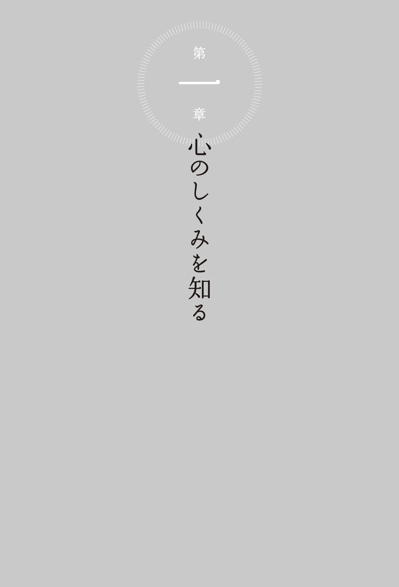
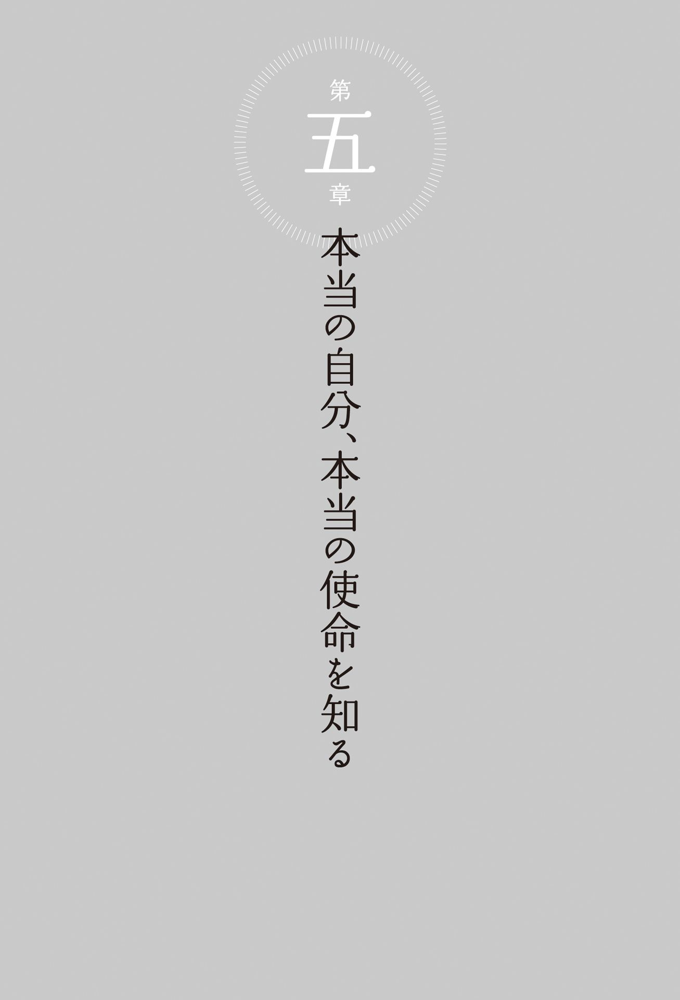

| 「心の癖」を変えて幸せに生きる | |
| ヨグマタ 相川 圭子 | |
| (2014) | |
ヒマラヤ聖者のシンプルな智慧
「心の癖」を変えて幸せに生きる
ヨグマタ 相川圭子
もくじ
第 一 章 心のしくみを知る
第 二 章 魂の存在に気づく
第 三 章 心の癖を変える
第 四 章 「執着」を手放すことができた人たち
「瞑想をするようになって、人への気遣い、容姿へのこだわり、家族への思い、仕事などへの執着が、一つ一つ外れていきました」
「いつも無意識に考えていた癖が、ディクシャで溶けてしまいました」
「太陽のようなエネルギーが心身を浄化し、生命力を高め、健康になりました」
「お化粧、アルトサックス、恋愛、全部の執着が取れて身軽になりました」
第 五 章 本当の自分、本当の使命を知る
「ヨグマタジに出会って、本当の自分、本当の使命を知りました」
第 六 章 「真ん中」にいるということ
は じ め に
私たちは、人を愛したり、ものを愛したり、さまざまなつながりをつくって、豊かな生活を探し求めています。豊かであるといわれているなかで、本当の豊かさとはなんなのかと考え、本当に豊かなもの、本当に豊かな知識、本当に豊かな人との関係を求め続けています。
それが得られたとき、得られなかったとき、それをあきらめてしまった人生と、さまざまな人生があります。
人はいったいどのような人生を生きていったらいいのでしょうか。
今回、みなさんがよりいっそう深く自分を見つめるきっかけとなればと、この本を書かせていただきました。どうしたら、まわりと自分の中のつながりを、調和がとれ、愛があり、本当の自由を感じて、ストレスのない成長にしていくことができるのでしょうか。そのようなことも考えながら書きました。
私たちの心は、素晴らしく発達をして、日々体験をし、豊かな人生をつくり上げていっています。そうしたなかで、どんどん望むものを手に入れて、勝ち続けている人もいるでしょう。
物質的な豊かさを手に入れ、また、知識を豊富にして、物事の理解を深め、豊かな精神を形成している人もいるでしょう。そうやって、どんなに素晴らしいものを外側から手に入れても、そこには必ずストレスがつきものですが、そうしたものも、無視して生き続けているのかもしれません。しかし、さらなる豊かさを求めて、あなたは最高に美しい人生を築き上げていくことができるのです。
一方、ストレスを感じ、望むものが手に入らないという体験をした人もいるでしょう。何かが混乱しているのかもしれません。どうしたらよいのでしょうか。あなたの心の性質をもっとよく知り、体の性質ももっとよく知り、そして真理とは何かということに気づけば、よりいっそう楽に生きていくことができるはずです。
この本ではそれぞれの章で、そうした心の働きや感情の働きについて、考察しました。
人の心や感情は、ときに顕著に表れるので、よく見ることができます。自分のなかに表れた心も、もちろん見ることができます。しかし、多くの人は、自分を守るために、自動的に反応し、自動的な行動をとっています。もっと覚醒し、自分が何を考えているのか、どう行動しているのかということに、気づく必要があります。この本では、そうしたことにも触れました。
あなたがさわやかな気持ちで、力強く生きていくためのガイドも、サマディ（悟り）からの知恵を込めて紹介しました。誰もが素晴らしい可能性を持っています。一所懸命生きていけば、いつか可能性が開けるかといいますと、そうではありません。すでに私たちは、運命が決定されているのです。過 去 生 からのさまざまな行為の印象が刻まれたカルマ（業）が、運命を決定しているのです。そのカルマの大きな影響のもとに、人生は展開していきます。
私は、稀有な縁により、ヒマラヤ聖者にピックアップされ、ヒマラヤの奥深くで、究極の真理に出会う、サマディという修行をすることができました。何年にもわたり、ヒマラヤの奥地の山にこもり、死を超える修行をすることができました。そうして、サマディに達しました。
すべての社会生活から逃れ、心と体を浄化して、内側を透明にし、そのさらに深くに何があるのかと探求していきました。私たちの究極の存在が何であるのかということを、身をもって、実践を通して体験しました。それは魂のすべてが浄化され、純粋な魂、本当の自分になるという体験です。神と一体となるという体験です。究極の悟りです。
この体験から、あなたに与えられるものはなんでしょうか。
あなたは、もともと素晴らしい、源からやってきた永遠の存在である魂から、さらに学びのために、心の機能をいただき、体をいただいて、この世でさまざまなことを体験しています。
その体験が、ただ欲望に翻 弄 されるのではなく、しっかりと源につながっていかなければ、暴走をしてしまい、自分が何をやっているのか、次第にわからなくなってしまうのです。
誰の中にも純粋な魂が宿っています。しかし、それが曇ってしまい、そこから切り離されて、自分の純粋な魂がわからなくなっているというのが現実なのです。あなたは源を離れてしまいましたが、やがてそこに戻っていくという約束のもとに、さまざまな体験をしているはずなのですが......。魂をすっかり曇らせてしまった現代人は、果たして源に還 ることができるのでしょうか。自分が誰であるのか、思い出すことができるのでしょうか。
現代人は、現代社会に生きることにより、欲望をいやがうえにも肥大させ、ひどい曇りをつくってしまいました。その曇りのことを、たくさん述べさせていただきました。あなたは、晴れやかなあなたになるために、もう一度、源に、信頼によってつながらなければならないのです。
現代人のほとんどは、欲望によってつながっています。キラキラと輝いて見えるもの、美しいものとつながっています。そして、ほとんどの時間を、そのつながりのなかで費やしているのです。生まれてきて本当にしなければならないことをやっていただきたいと、私は願っています。あなたの人間としての成長を、心から願っています。
今回、実際にヒマラヤ秘教の修行をして変容した人の声も、紹介させていただきました。実際に源の自分につながって浄化し、変容し、自由になった人、これからもさらに本当の生き方をしていこうという人たちの声です。人間は、普通なら変えられない運命を変えることができるという喜びの声でもあります。誰もが変容できるという証明でもあります。
生きていることは、とても素晴らしいことです。本当の意味で自分を磨くことができるからです。ヒマラヤ秘教の恩恵は、これまでに知られていたこととは、まったく違った自分の磨き方です。あなたは、何かを得るのではなく、落としていくのです。捧げていくのです。シェアするのです。それは、あなたがもともとは輝く存在であり、その光を放ちたい、という源からの願いに沿った生き方なのです。
私たちは生まれてから、いやそれ以前から、「不足」にばかり意識を向け、不足を探し続けています。黒い点ばかりを見ています。その黒い点とは、なんでしょうか。あなたの癖です。その癖が増大していきます。醜い細胞が増えていくようなものです。それも、知らないうちに、押し寄せるように増大しているのです。私は、おせっかいにも、あなたにそのことを警告したくて、この本を書かせていただきました。一般にはどうでもいい癖だと、思えるかもしれません。甘いものが食べたくなったら、甘いものを食べて楽しめばいいのではないですか。そうです。人生は豊かに過ごすに限ります。
でも、ただ、それがどういうことであるかということを知っていくこと。あなたのそうした知恵が、やがて、あなたを本当の喜びの生き方に導いていくのではないでしょうか。
ただやみくもに欲望を満足させる生き方から、本物の生き方へとシフトしていただき、人生をより価値あるものにしていっていただきたいのです。教育が充実し、生活が充実した今、内側からの喜びを得るために、ヒマラヤの恩恵は最短コースであなたの内側を浄化させ、変容させます。そうして、あなたに、あなたの本質を取り戻していただきたいのです。
一般には手の届かないところにあるこの学びが、今、私を通してヒマラヤから下りてきました。
物質的に何もない時代、今から五千年以上も前に生まれた修行法であるからこそ、心と体にしっかりと向き合うことができ、魂はなんなのかが、わかったのだと思います。
さらに二千五百年前にブッダが生まれ、二千年前にキリストが生まれました。ともに悟りの魂です。
誰のなかにもある純粋性の象徴であるブッダのクオリティ、キリストのクオリティを、今この現代に、再度開かせることさえできるのです。それが、ヒマラヤ秘教の恩恵です。ヒマラヤ秘教の恩恵は、神秘の力を引き出し、あなたの曇りを溶かす、祝福です。あなたのなかに眠る純粋性は、ヒマラヤ秘教の恩恵により目覚めるのです。
あなたがより進化し、意識を高め、心の闇が消え、愛と平和と知恵に出会えるヒントが、この本の中にあるはずです。人生がより輝きますように、あなたの人生が真理に向かいますように、あなたの幸せをお祈りいたします。この本を書くにあたり、多くの方々にサポートいただきました。皆さまのご支援に感謝申し上げます。皆さまの幸せを、お祈りいたします。
２０１４年８月27 日
ヨグマタ 相川圭子

心は常に働いています
あなたが心の働きを感じるのはどんなときでしょうか。
何かを気に入って、手に入れたいと最大の努力をはらっているときでしょうか。誰かに恋をして、その思いを伝えられずに心が悶 々 としているときでしょうか。何か大切なものを失い、そのことをずっと後悔しているときでしょうか。
「針のムシロにいるようだ」という、心の苦しい状況を表現する言葉もあります。実際そんな体験をした人もいるかもしれません。事業に失敗して四 面 楚 歌 になったときなどが、そうなのでしょうか。
普段、心の働きはあまり見えません。しかし、そのようなときには、とてもよく心の働きが感じられることでしょう。
もちろん通常のときでも、人の心は働き続けています。例えば、何か欲しいものが思い浮かんだとします。それを買おうと出かけるにあたって、どの道を通って行こうか、何を着て行こうかなど、さまざまな思いが頭の中を駆け巡ることでしょう。
そうして、外に飛び出し、さらにあれこれ考えているときに、ふとショーウィンドーの美しい洋服に、視線が止まります。
「あれは心地よさそうな洋服だわ」「ちょうどああいったものがないので、きっと便利だろう」と、その洋服からくる刺激に欲望がどんどん引き出され、自分にとても必要である、と思うことになります。
そして、強く欲しいと思った瞬間、衝動的にその店に入り、購入することになるかもしれません。あるいは思いとどまって、そこを立ち去るかもしれません。
いずれにしろ、こうした心の働きはずっと続いているのです。
このような心の作業は、まるで光のような速さで行われています。しかし、心は見えないことが実に多いのです。
何かを見たときや、人との会話、テレビや書物などの言葉に心が刺激され、欲望や感情が湧き出し、そして心は展開していきます。多くの場合、本人は心のからくりに気づきません。
心はいつも働いていますが、外側から見えることはありません。
しかし、究極の「サマディ」に達すると、内なるメカニズムがよくわかります。
サマディとは、心と体を浄化して超越し、創造の源にある真理と一体になり、究極の悟りを得ることです。ヒマラヤ秘教には、サマディに至るための具体的な方法が伝えられているのです。
心は「くっつく性質」を持っています
心が発達しているのは、人間だけです。心は、視覚、聴覚、味覚、嗅覚、触覚などの感覚から発達してきたものです。
人間は、危険を回避し、生命力を豊かに成長させていくため、さまざまな情報を得る必要がありました。視覚をはじめとする感覚から得たさまざまな情報の中から、自分に必要な良い情報を識別し、取り入れ、進化してきました。
関心のないものについては、感覚には情報が入ってきません。自分に合う情報、役立つ情報であれば、無意識のうちに入ってきます。興味があって求めているものについては、特に入ってきやすくなっているのではないでしょうか。
そして、役立つ良い情報が入ってきたときには、生命エネルギーが働いて、磁石のようにくっつける作用があるともいえます。人が求めている情報と、求められている情報がくっつきます。その二つがマッチングすると、それがシグナルになってスイッチが入るのです。そのように、心は「くっつく性質」を持っています。
情報を求めているのは、欲望です。欲望には、生きるために人が必要とするものと、エゴからのもの、限りない数のマインド（心）の、数々の発展欲があります。さほど必要ではないものがあります。また、自分ではほとんど気づかないような欲望もあります。
例えば、何かおいしいものを食べたとします。そのおいしさが忘れられないと、心は再びそれを求めます。その体験は記憶になり、それを売っている店を探すかもしれません。すぐに探し出せなくても、何年か後にそうした店に出会って、再び引き寄せられるかもしれません。
ヒマラヤのとある道場に厄介になり、一人で修行をしていたときのことです。とても小さな、生まれたてのような子猫が、私の部屋に入ってきました。
私はその子猫に、ちょっとどうかとは思ったのですが、甘いお菓子をやりました。すると次の日も、子猫はその味が忘れられずにやって来たのです。猫は本来、肉を食べる動物ですが、お菓子の味が忘れられなくて、そのような行動を繰り返したわけです。
人間でしたら、どうしよう？ とか、行ったばかりだからとか、さまざまな心が働いて、続けては来ないかもしれません。しかし、猫はその味が忘れられず、しっかりやって来たのです。
子猫の何の穢れもない純粋な感覚に、この甘さとの出会いはたいへん印象深い体験だったのだと思います。その印象はそれを繰り返させる行為にプログラミングさせたのです。私は「くっつく性質」のことを考えるとき、子猫の可愛さとともに、そのことを思い出します。
もちろん修行していた私の純粋なエネルギーも、それを引き寄せることに影響したのかもしれません。そうしたことも、サマディの修行中には起きることではあるのです。
さまざまな因子が「くっつく性質」をつくっています
心の「くっつく性質」には、いろいろな要因があります。
おいしいという記憶で引き起こされることもあります。好きという、心地よさが引き寄せることもあります。心の思いの原因があって結果があるのです。
つまり因子を持っていると、それによって引き寄せられるということです。その因子は、今 生 のものであることも、過 去 生 のものであることもあります。
しかし、そのことについて、本人が気づくことはありません。多くは無意識に行われています。
それは良い思いからの体験ではないものも引き寄せます。それは自分を蝕 む悪い思いや、あるいは癖です。そうしたときには、さすがに気づくこともあるようですが......。
「類は友を呼ぶ」とよくいわれていますが、同じ性質のものや、同じ波動のものは引き合うのです。これらは、 カルマ の法則、因縁の法則でもあります。後で詳しく説明しますが、同じ因子を持っていると、それが引き合うのです。
あなたが「こういうタイプの人が好き」という思いがあると、大勢の中からそうした人が目につき、探し出せることがあるかもしれません。
それは、このような波動が欲しい、と願っていると、あなたのアンテナにその波動が届くからです。
逆に、求めてはいない情報は、無視ないしは排除ということになります。それは無関心なので引き寄せないし、近づいてきたときには排除となります。
しかし、嫌いなのに引き寄せられることもあります。それはこだわりの心がそこにあるからなのです。
これらのことは無意識で行っていることが多く、頭でしっかりと考えて行っているわけではありません。
もちろん、ひどく好きであるとか、嫌いであるときは気づきます。しかし、考えて行っていること以上に、私たちが長時間、無意識のレベルでその都度行っている作業なのです。
これらの無意識の作業によって、最初の体験があって、それに執着したとき、あるいは繰り返した体験で、引き寄せることが自動的に起きるようになっていきます。
引き寄せるのは、それを好む気持ちがあったり、相性が良かったり、こだわりがあったりするからです。その後は、その感覚に従って価値判断し、自動的にそれが起き続けます。ただし、悪い癖で引き起こされることが多いということもあるので、一概に良いことばかりとは言えないのです。このからくりを知っていく必要があります。
＊ カルマ 日本語では業 といわれ、思いと行為のこと。考えること、思うこと、感じること、行動することはすべて心身の行為であり、それは記憶となって心の奥深くにその印象が刻まれます。そして、外からの刺激により、それが活性化され、カルマの記憶は再びカルマの欲望によってのアクションを引き起こします。
「くっつく性質」の起源は宇宙にあります
「くっつく性質」の起源について考えてみましょう。
宇宙では、さまざまなエネルギーが引き合っています。引力が働いているわけです。
宇宙には、さまざまな創造物があります。それらの創造物は、すべての創造の源、神（ブラフマン）によって創られました。
まず、すべてに生命を与える、サンスクリット語でいわれるプルシャという存在が現れ、同時にプラクリティという物質の源の存在が現れました。その後、神の意思によってその二つのエネルギーがくっついてすべての創造物が生まれ、展開していきます。その性質は活動的な質、暗性の質、それに純粋な質が混在して成り立っています。
それは見えない形から、見える形への創造です。空気中の水素と酸素がくっついて、水という見える物質になるというような創造です。
存在の源に、空、風、火、水、土のエネルギーが現れます。そうしたなかで、それまで目に見えなかった物質が、順次目に見える物質になっていき、物質が現象化していったのです。
そうした創造のさまざまなプロセスが、宇宙には起きています。引き合う力（引力）によってバランスをとりながら、創造と破壊が繰り返され、良いものを維持し育てているのです。
宇宙では惑星と惑星が引力で引き合い、バランスをとっていますが、そこには広大な空間があります。引き合う力により、その宇宙空間で新しい星が生まれたり、または消滅する星もあります。
宇宙も地球も常に引き合って、空、風、火、水、土の五つの元素が混在して、新しい性質の物質をつくり続け、同時に消滅し続けています。植物が生まれ、動物が生まれ、増え続けて、役割を終えると消滅し、新しい生命が誕生していきます。それが宇宙の創造の営みであり、神秘なのです。
人間も、そうしたなかで生を受けました。生きるために、幸せになるために、どんどん成長し、男性と女性は引き合います。男女は結ばれて子孫をつくり、必要なものを引き寄せ、必要なものを食べて成長していきます。
それぞれの生物は、何を引き寄せ、何を取り込めばいいか、太古の昔からプログラミングされ、それが習性になっています。
さらに人間は心を発達させて、それを使い、便利さ、快適さを追求していきました。そうして、今やその回路にどっぷりつかっているかのようです。 人間が次々に創造していく回路は、とても速くスムーズで、自然に生まれた働きと見分けがつかないくらいです。
自分の好みによって、良いものをくっつけ、記憶の作用によって、守るためのものをくっつけ続けています。知識を取り入れ、友達を取り入れ、信用を取り入れ、疑いを取り入れ、愛を取り入れます。また同時に嫌悪も取り入れて、巧妙にバランスをとっています。
それが、「くっつく性質」の起源のプロセスなのです。
感覚が「くっつく性質」の入り口です
「くっつく性質」の入り口を担っている、感覚について見ていきましょう。感覚はすべての動物にあり、それぞれに特有な感覚の発達の仕方があります。
目がよく遠くが見える鳥たち、皮膚の感覚で速く泳ぐことができるイルカ、耳が発達して遠くの音をキャッチする象、そして犬は匂いに敏感です。それらは、安全に生き延びるため、逃げるために備わった大切な命綱の機能です。
それぞれ、一つの感覚がより鋭く発達して、超感覚といわれる機能もあります。それらの感覚によって、大自然のなかで身を守って悠々と生きています。何ら不自然なものを持たずに、自然にサレンダー（明け渡す）して生き続けているのです。
人間は、一つの感覚の発達だけではなく、神から多くの恵みをいただきました。視覚、聴覚、嗅覚、味覚、触覚をいただいたうえに、超感覚もいただいています。それらの感覚は、まず外の世界と接して情報を伝えてきます。
美しい景色を見るのは視覚の機能、つまり目の働きです。二つある目の片方が欠ければ、神経が狂い、体のバランスがとれないのです。二つ備わっていることは、意味のあることです。また、「目は心の窓」とよくいわれるように、心の状態をも表します。
目は色を識別することにより、センサーの役割をしています。そのセンサーは物体の色の波動を敏感に感じ、それを心に伝えているのです。そして、体験や知識の記憶が引き出され、照らし合わされ、心はそれがなんであるか識別して、理解します。
例えば、赤い色だとエネルギッシュだと理解されたりします。あるいは、過去に火事にあった記憶が引き出され、怖いという感情が湧き上がってくるかもしれません。その人の過去の体験によって、赤い色に怖いという判断がくっついてしまうと、そのようなことになるわけです。
感覚はセンサーなのですから、外の情報を正しくあるがままに捉えることが必要ですが、そうはなっていないのが実情です。それを、感じる人、感じない人、さらに、個々の心の思い込み、価値観による解釈が入り、実にさまざまなケースがあるのです。
感覚からの情報により心が働きます
感覚は神経の働きです。心と体の内側の異常も知らせてくれます。
目は、真の悟りや幸福の修行をする際、内側を浄化していく大切なツールになります。
きれいな音色が聞けるのは聴覚の働きです。耳は二つあり、左右のバランスが大切です。
歳を重ねてストレスなどで、難聴になる人もいます。体のゆがみや心のストレスを、耳を通して知らせてくれます。耳のバランスをとることが、体調を改善することにつながるわけですが、体のゆがみやストレスが改善されれば、耳の状態も良くなります。そうして、音は心を浄化する大切なツールになります。
芳しい香りは、嗅覚の働きが届けてくれます。鼻腔も二つあります。
左右の鼻の呼吸が、二時間ごとにスイッチの切り替えで働いていることを、ヨギ（ヨガの聖者）は発見しています。それによって心理状態、体の状態がわかり、鼻の呼吸のバランスで、神経をコントロールすることができます。やはり、呼吸によって鼻のバランスをとることが、素晴らしい修行法になるのです。呼吸で取り入れるプラーナ（生氣）の統制で、生命もコントロールできていきます。
そして、おいしい食べ物を味わうのは味覚の働きです。変なものを食べてお腹をこわさないようにしています。それに、舌や喉も修行のツールになるのです。
気持ちの良い季節のそよ風の感触は、皮膚の感覚であり、安らぎを伝えてくれます。
それらの感覚によって気づきが進化し、意識を覚醒させ、そのことでさらに深いバランスをとることができます。
これらの五つの感覚に加えて、第六感の超感覚は、あなたを未知の世界にいざないます。
そして、六つの感覚から伝えられる情報を受けて、心が次なる行為をします。情報を理解し、記憶し、判断します。そして、再びその気持ち良さを味わいたいという欲望が湧き、執着をつくり、その体験を繰り返し求めます。
実際には、心が求めているのですが、まるで感覚自体が求めているかのようです。感覚が美しいものを見せたり聞かせたりすることによって、求める心が生まれ、感覚からの情報によりますます欲しくなっていくのですから。
まるで感覚そのものが、それに向かっているかのようですが、実は心があるからです。感覚には記憶などないのです。
ヒマラヤ秘教では、この感覚をコントロールすることを重要視しています。感覚そのものを浄化し、正しい感覚の機能にします。
また、外からの刺激が加わっても、感覚が働いていても、その刺激に作用されない不動の心をつくることが進化です。
あるいは、感覚を閉じて働かせないことを選ぶ行者もいます。一定期間、人と会わないようにするとか、暗闇に暮らすとか、断食をする。また、一切口を利かない修行もあり、それをモウナ（沈黙）の行と言います。そのような修行をすることで、より深い心に気づき、浄 め、悟りを目指すのです。
もし、本当に感覚が失われて感覚がないとしたら大変なことになります。しかし、感覚は与えられ、通常は正常に働き、自然に守られているようです。常にバランスをとることが大切です。
ところが、実際難聴になってしまったり、突然目が見えなくなってしまったりすることもありえます。あるいは、鼻が過敏になってアレルギー症状を起こすかもしれません。
そのように、何か一つでも感覚が機能しなくなると、人はそのありがたさに気づきます。いかに恵まれた数々の機能が与えられているかを理解することになるのです。
心とはなんなのかを知りましょう
もっと心を進化させ、幸せになっていくためには、心とはなんなのかを知り、コントロールできる人になっていくとよいでしょう。
心はたしかに素晴らしいものです。人間は感覚に加えて、心を発達させてきました。そうして心の行動は、どんどんクリエイティブに豊かになっていったのです。
立って歩く人間は、手を自由に使うことで、頭脳が発達してきました。その一方で、逃げる、走るといった身体能力や、特別な感覚の能力が、他の動物より劣っていったということはあるでしょうが、それを補うために心が発達し、頭脳はさらに発達したとも言えます。
二足歩行により、手が自由に使えるようになった人間は、手で物を摑 み、さらには自分の思った通りのものをつくることができるようになりました。つくりすぎて余ると、他の便利なものと交換することを覚え、それを通して他の人との交流も活発になっていったのです。
人間の手は、さながら欲望の象徴のようです。よく発達し、器用さを増し、それが脳により刺激を与えることになり、頭脳はさらに考えたり、記憶したり、比較したりと、より幸せになるために物と知識を集めました。
頭脳と心の進化は、こうしてコミュニケーション能力を発達させ、そのツールとしての言葉も発達していきました。それによってさらに、さまざまな学問が発達し、良いものが欲しいという願いから、素晴らしくクリエイティブな神のような力すら得たのです。
人間は幸せに生きるために、手を使って衣食住を豊かにするものをつくりだしてきました。そして危険を回避し、生命力を豊かに成長させていくために、心を発達させてきたといえるでしょう。
生きていくなかでさまざまな体験を通して、感動がその心に記憶されていきます。思考する心、記憶する心、思い出す心、想像する心、思い込む心、クリエイティブな心、集中する心、忘れる心、愛する心、意識する心、決断する心など、心にはさまざまな発達があるのです。
欲望が満たされると嬉しかったり、満たされないと悲しかったり、寂しかったり、怒ったりといった感情の、いわゆる喜怒哀楽の心もそうして発達してきました。
心の働きは、常に自らの命をつなげようとしています。そこに何か不足があると感情がサインとして働きだし、何らかのバランスをとるために、心と体が行動をとるのです。諦めたり、進んだり、止まったりと、命をつなげるためのバランスをとっていきます。その行動はすべて過去に学んでおり、過去の記憶から発生しています。
心は感覚がスイッチを入れることにより、自動的に働きます。欲望が心のスイッチを入れることもありますし、好きとか嫌いで心のスイッチが入ることもあります。
心の働きを注意深く見ると、自分にとって一番守りになるものを選んでいることがわかります。
例えば、悲しみが選択されたときには、じつはエゴが悲しみを望んでいるのです。
さらに言いますと、泣くということも、神が与えたものであり必要なことです。泣くことによって何かを知らせていたり、さらに、人間は苦しみを和らげたり、悲しい気持ちを解きほぐしたりするからです。泣くことも、必要があって行っているケースが多いのです。
心を制御できず、苦しみの中にいるのが人間です
物をつくり出し、便利なものがいっぱいになる一方で、人間の心はどのように進化したのでしょうか。その進化は、気の遠くなるほど時間がかかる進化であり、遅々として進まないように見えます。
人間は計り知れない回数の生まれ変わりを経て、進化していくといわれています。しかし、生きることが進化といわれても、人生は苦しみばかりで、生きることはなんと辛いことかと感じている人も多いことでしょう。
幸せを求めて超スピードで発達し、物に恵まれて便利になった現代社会、そこには本当の幸せがあるのでしょうか。競争社会で時間に追われ、神経を使い、心を使いすぎて、病に倒れる人も多く出てきました。鬱 という病気であったり、がんという病気であったり......。豊かすぎることで、糖尿病という病気もずいぶん広まっています。
心が発達すればするほど神から遠くなり、神の意思によって与えられたものではない、エゴによっての自己防衛が過剰になって、逆に危なくなってきているのです。人間は進化してきたはずなのですが、エゴによって、退行しているようにも見えます。
バランスが崩れているのは、人間の心身だけではありません。人間の営みによって自然そのものもバランスが崩れ、それが広がっていくいっぽうです。地震や津波、火山の噴火がひんぱんに起こり、突如の大雨（ゲリラ豪雨）、季節外れの雹 や、暑すぎたり、逆に寒すぎたりなど、異常気象もよく起こるようになりました。
人間は物の豊かさを得た反面、抱える苦しみや不安などもどんどん大きくなっているのではないでしょうか。だからこそ、私たちはいったいなんのために生まれてきたのか、そのことをしっかり理解しなければならないのです。
すべてを征服するかに見えるこの世の中の進歩。しかし、他方では自分の心を制御できず、苦しみの中にいるのが人間なのです。
人は、いろいろまわりのことを知っていても、自分自身については知らないのです。生きた人間の中に何があるのか、あなたの内側に何があるのか、それがわからないのです。
だから、あなた自身を知ることが、何よりも大切です。それこそが、真に自分の内側を満たすことになるからです。
自分の内側を本当に豊かに、知恵を溢れさせ、愛を溢れさせ、平和にしましょう。
人は外ばかりを見て、外側を満たそうとしています。そのようなことをしていたのでは、本当に自分が満ちた存在にはなりません。
自分について知っていくことにより、自分が満ちはじめるのです。いまだよく知らない自分を知っていくこと、さらには、本当の自分を知っていくのが悟りへの道です。
ヒマラヤ聖者はあなたにそれを紹介し、本当に進化する生き方を示しているのです。
「くっつく性質」の度が過ぎると執着になります
好きどうしは引き合い、嫌いどうしは引き合わない。これで混乱が起きないかに見えますが、果たして本当にそれでバランスがとれるのでしょうか。
人間は心を発達させてきました。そして、その力は増大してクリエイティブになり、ほとんど何でもつくれるようになりました。そのことにより、人間は自分の外側に実にさまざまなものをいっぱいくっつけて、豊かさを謳 歌 しています。それは物質の豊かさ、心の豊かさです。
しかし、だからといって、調和をつくりあげることができたわけではありません。
調和をつくりたいというのも、欲望であり、その思いは行為となります。
行為は体験として心の深くに刻まれ、記憶されます。記憶はまたなんらかの欲望になり、どれがいいのかと選択をし、心を使います。あるいは、思いの対象を引き寄せていきます。
それが、心の働く姿なのです。
何か美しいもの、気持ちが良いものを見たとき、目の感覚はそれをもっと見たい、欲しいと思います。そして、それを再び求めようとします。その感覚と結びついて、もっとくっつけようとします。
これは、好きという感覚でありイエスです。オーケーということです。
また、あるものを見て、それとはまったく逆に、嫌いという思いが湧き上がることがあります。受け入れることができないため、それを排除します。その感覚はノーです。
このようにセンサーである感覚は、即座に選ぶか排除するかを選択します。そして、さらにエスカレートしていきます。好きな感覚は、さらに「もっと欲しい、もっと欲しい」と求めます。その求めるものを、さらにくっつけようとします。
それは、イエスのスイッチが入るからですが、そこに働くのは心です。つまりは欲望です。それが異常にくっつけていく、執着の性質です。
執着は、「気持ちが良い」という心と同じものが、多くなりすぎることによって起きる現象なのです。
一方、心の欲求するものと反対の感覚があったときには、ノーのスイッチが入ります。自分を傷つけるもの、役に立たないものなどがそれらであり、「排除」ということになります。
これら「心の欲求の感覚」のイエスも、「心の嫌悪の感覚」のノーも、健全な動機であればなんの問題もありません。役に立つ情報、心地よい情報を識別し、その情報をしっかりと活かして、危険を回避し、人として進歩と進化を続けているということだからです。
ところが、「好きな感覚」も「嫌いな感覚」も過剰に作用しはじめると、思い込みによるこだわりになり、執着となっていきます。それは自然で健全な進歩と進化ではありません。
その原因はなんでしょうか。そのように、心の選択を決定させているものはなんでしょうか。
それは、その人の過去の経験からの選択の結果なのです。それが、カルマと呼ばれているものなのです。
潜在意識をコントロールできるようになるのが
幸せの秘訣です
心の働きは、通常、四六時中行われています。それが心の性質だからです。心は常に幸福を求め、気持ち良さを求め続けています。その人の興味のあるもの、情報を捉え、常に何かをつかまえようともしています。
瞑 想 をしていくと、それらの心の動きがよく見えてきます。
もし何か気にかかることがあると、その思いがずっとくっつき続けて、離れないことがあります。心配で、こうなったらどうしようとか、こうしたほうがいいとか先走りしますが、それは心が「今、ここに」いないからなのです。
あれこれと思いが巡るとき、リアルな想像をして、映像や音など体の感覚に訴えかけてくるかもしれません。そして、現実でないことに想像が及んでいきます。嬉しかったこと、悔しかったことなど、強く記憶に残っていることを思い出すかもしれません。
感覚から入った情報は、心に伝えられ、その情報によって、心が使う回路も違ってきます。そして、心のさまざまなレベルの働きが総動員されていきます。想像する心、考える心、記憶する心、判断する心、決意する心、意識する心、それに伴う感情など。その人のキャラクターによって、心の働きが違います。
そういうときの心は、見えている、意識している心と、見えないところで働いている心とに分類できます。
見えている、目覚めて働いている意識、その心を顕在意識と言います。
一方、深いところに潜んだ心があります。さまざまな体験を過去からずっと記憶している潜在意識です。
潜在意識の心は見えません。そして、その中にはなんにも意識していない無意識もあります。さらにそのもっと深いところ、潜在意識を超えたところにも心があります。それが、超意識です。
潜在意識には、過去のさまざまな体験が記憶されており、学んだ知識も記憶されています。これは私たちの今の行為に深く関わっています。それによって運命が決定されるのです。ここを知り、コントロールできるようになることが進化です。
潜在意識、無意識、超意識、この三つの形態があって、さまざまな心の状態が出現しているのです。それを基盤にして、心は幸せを求め、働いています。
さらに、それらを超えたところには、心の働きを知っている存在があります。心の働きを見ている存在です。それが純粋意識です。
しかし、大概の人はいまだ意識が覚醒されず、無意識に心の働きが行われています。それがエゴを増大させて、無理解と混乱を起こし、おごりや苦しみを引き起こしています。
この心を知って、意識を覚醒させ、潜在意識を浄化していくことで、自己をコントロールできるようになるのが、幸せになる秘訣です。
それはサマディへの道、悟りへの道でもあります。意識を進化させ、心身を自由自在にコントロールでき、豊かな人になって幸せになるための道です。
心の浄化と進化が必要なのです
誰もが幸せになりたい、心が美しくありたいと、頑張って生きています。しかし、その動きは遅々として進まないように思われます。
なぜなら、すでにプログラミングされていて、運命が決められ、人生のドラマが展開していくからです。心は、自分の思いで動いているように見えますが、本当にコントロールできているのでしょうか。
心はあくなき欲望に動かされ、欲しいと思ったら、まるでエサを求めるように、次から次へ取り込み、食べ続け、働き続けるかのように見えます。心の欲望は止まることはないようにも見えます。
どこまでも欲望をふくらませ、どんどんくっつけていくというのでしょうか。そして、その回路を使い続けて敏感になった心は、さながら磁石のような「くっつく性質」を持っているかのようです。
「因縁の法則」という言葉があります。
すべてには原因があり、それによって引き出される結果は、それと関連したもの、そのクオリティを引き継ぐものです。その流れは連綿と続いていきます。
ここで注意しなければならないことは、否定的な思いから生まれた結果は、また否定的な思いにつながり、それは連綿と続いていくということです。
思いを切り替えて、さっきとは違うことに集中したとしても、前の思いとその記憶は残存しており、終わってはいません。一度離れ、表面的に忘れていることはあっても、何かそれを刺激する同じ波動の対象が現れ、再び刺激が加わると、その記憶が活性化します。そして、その思いが引き出されるのです。
思いのエネルギーが、それと同じエネルギーの事柄を引き寄せ、くっつけ、作動し続けていきます。つまり同じ質の波動がリンクするのです。
心の奥には、さまざまなくっつける因子のある、執着の種が潜んでいます。
ですから、心の浄化と進化が、あなたを本当に守り、成長させていくために、必要なのです。
同じ経験をしてもカルマにより
「反応」や「痕跡」が違います
恋人に裏切られたという経験をすると、すべての男性、すべての女性が恋愛に慎重になるかといえば、そうではありません。すべての男性が「女性不信」、すべての女性が「男性不信」になるわけでもありません。
テレビ番組のインタビューで、道ゆく人にある事柄に対して「どう思いますか？」とマイクを向けます。そのとき、人はそれぞれに感じたことを答えますが、人によりかなり違っています。
まったく同じものを見ても、その受け取り方、感じ方、感想は人それぞれに違います。それは、見たものがなんであるかより、受け取る側がどのような人であるかによって、変わってくるものです。
感覚のレベルで何かが異常に働いているケースもありますし、心のレベルでの記憶によっても大きく違ってきます。記憶の元になっている体験を否定的に記憶しているか、肯定的に記憶しているかによっても、大きく違ってきます。
正しい心で見ているかというとそうでもなく、人それぞれの価値観によって違います。その人が好きであったり、執着していたり、嫌いであったり、無関心であるかによって、大きく違ってしまうのです。
一般に何かを体験したときも、感じ方は人によって違います。苦しみとして感じる人、学びとして感じる人、良いと感じる人など、実にさまざまです。
誰かに意見されたときも、それを感謝して受け取る人もいれば、その途端に落ち込んでしまう人もいます。同じ経験をしても、それが人に及ぼす「痕跡」は違うのです。
なぜ、こうしたことが起きるのでしょうか。
人の行為の経験は、すべてその人の心身に記憶されています。それをカルマと呼んでいます。
このカルマが、次の行為の原因になるのです。 似たようなことが続けざまに起きるのは、そのためなのです。
とても良い体験だと、また体験したいという強い思いが、執着となって潜在意識に記憶されます。欲しいものを手に入れたときも、もっといいものが欲しいという執着になります。
一方、何かの理由で成し遂げられなかった無念の思いも執着になります。
例えば、嫌な体験をしたとき、それはストレスとなり、エネルギーに「嫌悪」の色がつき、ブロックされます。このとき、心身は緊張し、内臓の働きが弱くなることもあります。お腹が痛くなったり、吐いたりしてしまうのはそのためです。
エネルギーがブロックされたわけですから、たいして何もしていないのに、ぐったりするというようなこともあります。やろうと思っていたことがスムーズにできなくなることもあるでしょう。
お腹が痛くなったり、吐いたり、ぐったりしてしまうというのは心身の否定的なリアクションですが、それもまたストレスとなり、カルマとなって記憶され、同じようなことが繰り返される原因になるのです。
心身がそのような状態になったときには、具合の悪い気分をそのまま人にぶつけたりするかもしれません。誰かを憎んで許せなかったり、競争相手が気になっていたりすることもあります。
仕事のことを異常に心配したりするのも、このようなときです。まわりの人の目を異常に気にするようになる、という人もいます。
そのような心身の状態が、カルマによって引き起こされてしまうのです。
カルマが「くっつく性質」を発生させています
心の性質をさらに見ていきましょう。
心は、エゴからきた自己防衛としても働くので、真理からの正しいものを選択しているわけではありません。もっとも本人としては、正しいと信じて選択しているわけですが、もともと思い込みによって見える範囲が狭くなったうえでの選択です。自己防衛であり、本人の目から見た正しさです。
それに、自分を守るための無意識の思いが選択を限定させているわけですし、嫌いという心の思いも選択を限定させています。親や社会の教育や学校での教育、さらに、自分が傷ついたことでの否定が前提になっているケースもあります。
それらが執着となったのであり、「くっつく性質」はその人の無意識のこだわりが原因になっているのです。
これまで見てきた執着や「くっつく性質」は、人間がつくるカルマから来ています。
宇宙が壮大なバランスでできていく、その壮大な「引き合う性質」も、「くっつく性質」と似ているといえるかもしれませんが、それと心の「くっつく性質」とは、その意味するところはまったく反対のことで大きく違います。宇宙のものは自然から生まれ、バランスのために、与えるために発生していますが、人間の執着となった「くっつく性質」は、個人の欲望、エゴから発生するものです。
ですから、表面的に見て似ているところはありますが、人の欲望の産物である、心の「くっつく性質」は神の思いではなく、エゴの思いからであるというところが、決定的に違うのです。
問題は、その違いを多くの人が気づいていないことです。そして、それは見えない部分のからくりであり、それを改善する方法は、誰にもわからないのです。そのことが問題を大きくしています。戦後、心理学などが心の分析をし始めましたが、それを根本から変える手立てとはなっていません。表面からではわからないわけです。しかし、ヒマラヤ聖者は五千年以上前から意識のコントロールのすべを知っているのです。
神は、本当に強く私たちを創ってくださっています。どんな状況にも適応してバランスがとれるようにしてくれています。エネルギーを注ぎ込み、生かそうとしてくれています。
大事なことは、人生のハンドルさばきは、すべて自分の心によって行われているということです。つまり、無知とエゴによって展開していくことが、今現在、さらに将来の大きな苦しみにつながってしまいます。 そのことに、まず気づいてください。
ヒマラヤ聖者は、修行によってそのカルマを浄めることを知っています。神の意思のような強い力を得ることができます。それは「サンカルパ」という、強力で純粋な、神のレベルからの意思の力なのです。
あなたも、心を浄め、カルマを変え、運命を変えられるのです。そして、そうした神聖さを目覚めさせ、サンカルパさえ開発できる可能性があるのです。
カルマから自由になる道があります
カルマとは行為の記憶のことであり、広義の意味では行為のこともさしています。人が、感覚や心で引き寄せていくもの、くっつけていく傾向は、カルマによって繰り返されています。
カルマがあるからこそ、欲望が働きだします。
人の行為は、欲望によって突き動かされています。それは、神の命令からくるものばかりではありません。つまり深い知恵からくるのではなく、カルマの仕業なのです。
人は、カルマによって次から次へと欲望をふくらませ、翻 弄 され続け、行為をし、生きていくことになります。さまざまな願いを叶えながら、生き続けていくのです。
その一方で、人生は願いが叶わず、無知な思いや感情に振り回されての我慢の人生でもあるのです。
こうした、エゴを肥大させたり、悪いことばかり起きてしまったりする人生のやり直しは、できるのでしょうか？
真の成長をはかる人生を進んでいけるのでしょうか？
しかし、自分の内側は本来、変えることができません。つまり、運命は変えられないのです。あなたが生まれたときに授かった運命を背負って、生涯、生きていかなければならないわけです。あなたが持っているものは、家でも車でも買い替えることができます。しかし、自分の心と体は、調子が悪いからといって買い替えることができません。
では、いったいどうしたら、自分の心身を買い替えずに幸せになれるのでしょうか。
ここに、人が真に幸せになれる、ありがたいヒントがあります。ヒマラヤ秘教からの朗報です。ヒマラヤ秘教によって、カルマを変えることができるのです。あなた自身が良いカルマを積むことにより、カルマを変え、運命を変えられます。それはヒマラヤの恩恵の悟りへの道にあるのです。
ヒマラヤ秘教の修行や瞑想により、内側のカルマを焼き切ったり、溶かしたりすれば、カルマの浄化やコントロールはより確実なものになります。それは、人間としての進化にほかなりません。
そのようにしなければ、あなたのカルマに翻弄される旅は、ずっと続きます。この世での生涯が、カルマに翻弄される終わりのない旅になり、エネルギーを消耗するのみで終わってしまうのです。
そのなかでも、欲望のカルマによる心の満足はあるでしょう。しかし、それは物質的なもの、一時的なものです。その一時的な心の満足を、ずっと続く幸せだと錯覚し、それを求め続けていくことになるのです。
その生き方は、もちろん神の意志に従った生き方ではありません。
神が人間を創った当初は、人間は神の愛によって行為をしていました。神に守られ、神の思いと人間の思いは一致していたのです。
しかし、その後にカルマの欲望に支配されるようになります。人間は、神の願いではなく、カルマの願いで生き続けていくことになったのです。
それは、苦しみであるとともに、実は救いでもあります。
その意味を発見したのが、ヒマラヤ聖者です。カルマとはいったい何なのか、そのカルマを自由自在に操り、それを超え、カルマから自由になることのできる道がありました。
カルマは常にさまざまなものを引き寄せ、くっつけてバランスをとろうとしています。
ここでの学びは、いかに私たちは、すでにいろいろなものをくっつけ、これからもくっつけようとしているかです。そして、それにどう対応して、素晴らしい人になっていくかです。
くっついている状況がカルマであり、くっつき、執着になっている状況がカルマなのです。それを、どうすれば変えられるのか。
そのように考えて、探求し、ついに苦しみから解放させる道を発見したのが、ヒマラヤ聖者なのです。
何もくっついていない状態こそが楽なのです
怒り、憎しみ、嫉妬など、ネガティブな感情について考えてみましょう。
どんなときに、そういう気持ちが湧き上がるのでしょう。自分の願いを相手が聞いてくれない、相手が理解してくれない、受け入れてくれないといったときもそうです。それは、わかってほしいという執着の欲望です。相手に愛を求める執着です。相手の愛を引き寄せたいのです。
そうしたとき、自分のこだわりや、相手に期待する願いが叶わず、心地よくない心が湧き上がってきます。摩擦や抵抗なども感じます。そして、ついにはわかってくれないと感じ、それが怒りのエネルギーになるのです。憎しみ、嫉妬を感じるかもしれません。さらには、虚 しさや悲しみに変わっていくこともあります。
願いが叶わないときに、すっと諦めればいいのですが、執着があり、それが満たされないときには、ジレンマの感情が湧き上がります。そして、自己防衛から怒りのエネルギーになります。怒ることで感情を爆発させ発散します。
しかし、その人のエネルギーは消耗して、やがてストレスとなるのです。
また他の人と比べて、相手が何かを持っていて、自分に何か不足があると感じると、嫉妬や憎しみのエネルギーになるかもしれません。
このように、怒り、憎しみ、嫉妬などのエネルギーが発生することによって、苦しみが引き起こされていくのです。こうした無知な思いや感情は、欲望とセットになって、苦しみをつくりだしていきます。
誰もが、心に今までの体験や信条による価値観があります。それにこだわりや執着があります。その考えを実現させたいとか、相手がそうなってほしいと願います。
あるいはその願いを成功させることで、その対象を手に入れたい、くっつけたいという思いが生じます。しかし、その欲望が叶わないと、嫌ったり、イライラしたり、悲しんだり、傷ついたり、怒ったり、嫉妬したり、憎んだりと、苦しみを生み出していくことになります。
興味のあるものに執着するのはオーケーであり、引き寄せたくなったり、くっつけたくなったりするものです。しかし、向こう側に気に入られても、こちらが嫌悪して、抵抗することもありますし、あるいは、こちらが気に入っても、向こうに抵抗されることもあるでしょう。抵抗されると不調和になり、摩擦が生じ、否定的な心が生まれます。
これらは、反発の関係になり、心地よくなくストレスになるのです。
また、気に入ったからといって、さらに執着を持ち、くっつく対象を追い求めていくのは、あまりに安らぎがなく、落ち着かない姿です。あるいは執着したものに依存した姿であり、エゴが肥大し、マインド（心）が強くなり、まったく平安がありません。
逆に、相手から執着され、依存されるのも、重苦しく、束縛される感覚になるでしょう。
どちらも、エネルギーが引っぱられ、偏った落ち着かない状況といえます。
そのうえ、一時的に自分が引き寄せ、くっつけようとしても、すぐに飽きて、違うものに関心がいくということもあります。ただし、対象が変わっても、執着してくっつけようとする心は、依然そこにあるといえるのです。それがストレスになります。
本来、何もくっついていない、シンプルな状態こそが楽なのです。
ありとあらゆるところに「神の力」がある
私たちを生かしてくださっている生命エネルギーは、根源の力です。それを、私たちは「すべてを創造する神の力」と呼んでいます。
神様というと「人間の外にある崇高な存在」を思い浮かべがちですが、私たちが「神の力」と呼んでいるものは、そこにだけあるのではありません。
あなたのまわりのありとあらゆるところにあります。そして、あなたの中にこそ、それがあるのです。
人が生きよう生きようとすると、そこに生命エネルギーが働き、ドラマが展開されます。しかし、必ずしもスムーズにはいきません。
人間には心があって、そこに神の力が働いています。しかし、心はそれを知らず、自分が人生をハンドリングしていると思っています。
「すべてを創造する神の力」は、人間をはじめとするすべての生物、すべての生命、すべての物質に働きかけています。
私たちが、肺呼吸をし、皮膚呼吸をするのも、植物が呼吸や光合成をするのも、創造の源の力によってなのです。
例えば、私たちが手で目の前のティーカップを持ち上げるとき、持ち上げるという欲望で手の筋肉が働いて持ち上げていると考えます。しかし、それをより詳しく見ると、「筋肉を使って持ち上げている」ということですが、生命エネルギーがないと、筋肉があってもティーカップを動かすことはできません。
オリンピックに出場する重量挙げの選手は、筋繊維が太くて、ものすごい筋肉があります。しかし、その重量挙げの選手が死んでしまえば、いくらものすごい筋肉がそこにあっても、ティーカップすら動かすことはできないのです。
その「神の力」は、私たち人間の中にあるのです。
人のせいにしないことです
人は、自分が今、何を思っているのか、自分の内側の心が見えないときが多いのです。そして、無意識のうちに行為をしています。
何かを見たり、聞いたり、外からの情報の刺激が感覚を通して入ってくると、それに対して自動的にリアクションをしています。何を考え、どうリアクションをするのか。それらのことがとても素早い速度で自動的に行われているので、自分では把握することができないのです。
その時々でそれが快感であったり、嫌な感覚であったりするでしょう。気持ちの良い感覚ならば追い求め続けるでしょう。
これは無意識のリアクションと選択です。そのことに気づくことは、あまりありません。なぜなら、その感覚と心と一体化しているからです。
しかし、それが得られなくなると、苦しくなります。そして、それを追い求めていたのだと初めて気づきます。そして、相手を恨んだり怒ったりするかもしれません。それが、果たしてどれほど必要なものであるのか、気づくことが大切です。
嫌な感覚であるなら、そこから逃げないで「なぜ気持ちが悪いのか」と気づくのが、一歩前進なのです。
人は普段、自分を守るためにリアクションをしています。その結果、楽なことを選択しています。
苦しい現実があるときのほとんどの場合、自分に対して嫌なことが外からやってくると思ってしまっています。
そして、「どうして私は不幸なのだろう」「あの人が悪い」「あの人が責めている」「あの人が悪く言っている」、また「社会が悪い」「親が悪い」「環境が悪い」など、すべてまわりが悪いのだという考え方をして、自分を見ることをせず、人のせい、外のせいにしています。
しかも、それが正しいと思ってやっています。それが、自己を防衛して、楽になる方法だからです。
そして、嘆きます。いつまでたっても自分が何を選択しているのかわかろうとしません。無意識に「外が悪い」と常に否定を選択します。それも、楽だからです。人や環境のせいにしていれば、とても楽なのです。
しかし、それでは変わることはありません。自分の力で他の人の心や環境を変えることはできないからです。
これらのことは、自分で深く気づかない限り、本当の意味で自分が変わることはありません。
すべては自業自得、自分の責任です
うまくいかないことを、他の人や社会のせいにしても、現実は変わりません。
しかし、外側のせいにすることで、そのときだけは自分を助けることができます。だから、あえてそのように思うわけです。
うまくいかなくなった原因を引っ張り出したのは、自分です。失敗の原因が勝手にやってきたのではなく、自分が呼び込んだのです。極端に言いますと、すべては自業自得であり、自分の責任なのです。
自信がないので前に出ることができない。逃げてばかりいる。すぐに嫌だ、できないと思ってしまう。
そのような人は、自分を責めたり、嫌っていたりもします。他人も嫌いになるのですが、その前に自分が嫌いなのです。だから、他人を嫌悪し、他人からも扱いづらい人ということで嫌われてしまいます。
自分のできないことから逃げ、自分からさえ逃げているともいえます。
あなたの行為が良いものであれば、結果も良いものになるというカルマの法則があります。
あなたの発する言葉が良いものであれば、結果も良いものになります。あなたの思いが良いものであれば、結果も良いものになります。
良いものとは、エゴがなく、純粋な思いから生まれたものです。
しかし、行為のほとんどが自己防衛で、エゴからの欲望でくっつけたものです。鎧 をまとっての思いからの行為なので、いらないものを呼び込んでいくことになります。そうして、いらないものが集まり、それが混乱のもとになっています。
こうしたことに気づくには、長い自己の気づきの旅が必要になってくるのです。
ポジティブシンキングの落とし穴
もっと成功するために、また苦しい生き方を改善するために、ポジティブに考えましょうということで、ポジティブシンキングという考えが導入されてきました。
それは、もともと宗教にあった考え方です。堅苦しさがなく、手っ取り早い感じがします。しかし、テクニックや、言葉の羅列だけで行うのは、なにか内容がともなわない気がします。
それは成功哲学でもありますので、モダンな感じがし、いい方向に行くと思いがちです。しかし、内容がなく、自分に誠実でない気もします。
いずれにせよ、真理からのものであるかどうかを判断の基準に置いてください。これはポジティブシンキングだけではなく、すべてのことについて言えることです。
私たちは、心が働いて常にエゴが自分を守っています。それが当たり前になっています。
例えば人や両親に心配させないように、できもしないのに、キャパシティ以上にできるふりをしたり、また、じつは元気が出ないのに、大丈夫と自分に言い聞かせたりするかもしれません。
あるいは、少々無理をしてやさしくふるまったり、利口そうにふるまったりするかもしれません。そうして頑張って生きています。
もちろんそれで、次第に本当に深い部分の裏と表が一致していけば問題はありませんが、あるマインドの部分で頑張って、他の部分がその心に無理に従っても、そのために鈍くしているものが悲鳴をあげることになるかもしれません。
それは無理に装ったり、無理にそう言い聞かせたり、演じたりして、ある種のエゴを鍛え、後で疲弊をもたらすようなものではないでしょうか。
そして、そのことで、本当の幸せになれるかどうかも大切なポイントです。
ネガティブエネルギーをブロックしてしまうと、パワーが出ることはたしかです。しかし、自然な流れのなかで、ときにネガティブになることも、人間には必要です。そのときにこそ心の癒しがあります。見えない深い部分の癒しと気づきが必要なのです。
新しい宗教のほとんどは、ポジティブ信仰であるともいえます。
しかし、いつもポジティブだと、そのうちどこかでガクッとくると思いませんか。
頑張り続けると、エネルギーを消耗してしまい、ドカッと落ち込んでしまうのです。それが、自然のバランスというものです。
それに、相手があるときに、やたらにポジティブなのは、自分だけの成功、自分だけの幸せを求めているということになり、そうしたものが長続きしないことは、まわりを見れば明らかでしょう。必ずどんでん返しがあり、バランスが回復しています。相手の幸せを願い、調和をはかっていくなかに、人間的な成長があるのです。
潜在意識の強大な力の活用をすすめているものに、「自分への宣言」を行うアファメーションがあります。
アファメーションは、「私の病気は日々良くなっている」と宣言することで、潜在意識を変え、潜在意識の力で現実を変えていくというものです。これも潜在意識を意識的に使うことで、どんでん返しにあう可能性があり、真理からきているものではない、と私には見えます。
ポジティブとネガティブのバランスをとることです
多くの人は、自分の考えに囚 われています。自分を守って生きています。その考えや価値観に影響されず、そこから自由を得ることが悟りへの道です。
自分の立場だけではなく、相手の立場もわかる人になっていくこと、それが果たされるべき成長です。
真理のレベルから、人を本当に進化させる方法を考えたとき、ポジティブとネガティブについてはバランスが大事だということです。
ネガティブは悪いことのようですが、そうではありません。大事なのはポジティブとのバランスであり、調和です。
待つことや、呼吸を整えるということも必要です。 そのようなことをまったくせずに、いつもエネルギーをフルに出していると、まわりの空気が読めないということにもなりがちです。
見守るということ、安らぐということも必要です。
「得よう、得よう」ではなく、捨てることも必要なのです。
また、マインド（心）を使って、無理にポジティブにしていると、急に鬱になることもあります。一見、鬱は良くないことのようですが、そのようにして、マインドがバランスをとっているということなのです。
無理にポジティブにしているのは、自分のやりたいことを本当にやっているわけではない、ともいえます。
生命の源につながっていれば、そのようなことはありえません。
創造の源につながると安らぎがあります
ポジティブな価値観に踊らされていないかと、ときに自らを点検することも大切です。
マインドを使って、くっついた思いや執着でやっていると、魂が浄められることはなく、カルマを積むことになります。
真の成長は、気づきを持って生きていくことによりもたらされます。それがヒマラヤ秘教の教えです。
外のものばかり追わずに、自分の内側に目を向けていきます。自分の内側に何があるのかを知って、自分をコントロールできる人に進化していきます。
心を浄化して深いところからバランスをとり、それらを超えて無心になっていきます。さらに最も大切なこと、それは「あなたは誰なのか」を知るために、あなたの源につながっていくことです。
源のエネルギーのセンターは、最も力強く、静寂です。まるで台風の目のようです。
台風になると、暴風雨圏はものすごい嵐となり、激しい雨が降って、破壊のエネルギーそのもののようになりますが、その中心である台風の目に入ると、そこは無風であり、晴れ渡っています。それと同じように、創造の源は平和で、静寂でありながら、生命エネルギーに満ちています。
そこにつながっていると、心を超えているので心が働きません。あるがままでいいのです。
なにも必要とせず、すべてが満ちています。心に恐れがありません。無心です。何も引き寄せる因子がありません。そこに到達すれば、引き寄せる因子は溶けるのです。
到達していなくても、そこにつながることができれば、自己を守る何らかの思いや、感情や、欲望に振り回されなくなります。それを引き寄せることはありません。自己防衛の心に執着する必要がなくなってきます。
くっつき、執着する心を浄めきった、さらに奥に存在するもの、それはすべてを生かしている存在、神です。神はそこらじゅうにいるのですが、見えない存在であり、それにつながるには架け橋が必要です。
懸け橋となれるのは、そこを体験した悟りの存在であり、そのエネルギーを知り、そこの静寂とパワーを引き出してくれる存在です。
人は心に翻弄されて苦しんでいるのです
人は、源から現れた存在です。心があり、体があります。
感覚が発達したものが心です。感覚はアンテナの役割を担っていて、情報を引き寄せます。欲望の心で、それは働きだすのです。記憶と欲望、つまりカルマによって、さらにくっつけることに拍車がかかっていきます。
人は、心地よいものを求め、それを手に入れたときに、たしかに心地よいということが記憶されます。そうして、さらに強く、その心地よいものを求めるようになっていきます。
逆に、危険があるものには素早く気づき、「嫌なもの」となります。そして排除したり、避けたりするようになるでしょう。
そのようにして、エゴの心は、気持ちの良いものを、どんどん求め、くっつけていきます。気持ちが良いといっても、それはその人の思い込み、こだわり、価値観によるものです。人にとって良くないものもあります。
問題は、感覚と心にとって気持ちが良いというのが、ほとんどが執着からくる、自己防衛の感覚の喜びと心の快感であり、一過性のものであるということです。それは変化していくものであり、そのゲームを続けることは、欲望の渦にまみれていくということです。
本質、真理からどんどん遠くなり、虚しくエゴを肥大させていくということです。それらは、さらに執着をつくりだす余計なものであることが多いのです。
また、心のこだわりの多くは、魂にとってはどうでもいいものです。
しかし、心の渇きは、それを手に入れないと落ち着きません。
それは物心ついたころから、あるいは過去生からずっと行ってきた方法、心とともに長く生きてきて、そうせざるをえないわけです。
しかし、それは一次的な慰めであり、また何かを欲しくなったり、求めたりするのです。
どうでもいいものが、その人にとっては大切であり、そうしたものを異常に欲しがるのが、心の執着です。しかし、そのことがわからない人があまりにも多いのが実情です。
ときにはわかる人も出てきますが、わかってはいるけれどもやめられない、というのも、また実情なのです。
心でなく、魂が真理を知っているのです
心と感覚にとって気持ちの良いものは、「エゴの心」によるものです。魂の本当の願いとは違います。
それに、それらは一過性のものです。感覚の喜びであったり、心の満足であったり、自分をよく見せるためのものであったりします。
すぐ飽きるものであり、永遠のものではありません。そうした見えるものをかき集め、また飽きて、どんどん不要なものが増え、エゴの塊をつくっていきます。
心で頑張って、いろいろくっつけると、最初は良くても、やがて何かがしっくりこなくなります。
しかし、自覚症状があっても、自分のこだわりなどが原因とは思わず、社会やまわりの人や状況のせいにしてしまうのです。そうなると、人間関係がうまくいかなくなるでしょう。
また、自分との折り合いもつきません。どうしていいかわからないからです。
運よく気づくことができ、その執着やくっついているもの、心の思いを手放したいと思っても、離れなかったりして、苦しいのです。
エネルギーをどんどん消耗していきます。もちろん、それにも気づきません。ただ疲れるといった感じでしょうか。それは、その心のからくりがわからないからです。
そして、見えるところだけでさまざまなことを試して、さらにさまざまなものをくっつけようとしてしまいます。それはおごりであったり、治療法であったり、息抜きであったりします。
しかし、このときこそが、成長のチャンスなのです。自分の内側のメカニズムに気づいていきましょう。自分の心に気づいていきましょう。それが成長です。
そのことを、あなたの奥深くにある魂は、実はすべて知っているのです。
「人の不幸の上に、幸せを築いてはならない」という言葉があります。人の不幸の上に幸せを築くと、心は満足しますが、魂は間違ったことをしていることを知っています。
源の存在から切り離された、心の働きのみの幸せは、やがて苦しみを呼ぶことも、あなたの魂は知っています。
その間にも、心は働き続け、真理からどんどん遠ざかり、安らぐことがありません。
自分のなかに、宇宙のすべてのものがあるのです
自然は、限りなく創造を続けています。人間の命は誕生してから終わりを迎えても、また縁あるところに生まれて、命は続いていきます。
人間は心が発達したので、他の生き物とはずいぶん違っています。欲望があり執着があり、その願いにより、さまざまなものを引き寄せ、くっつけていきます。
その願いは、おもに自己防衛によるものなので、けっして調和することはありません。ですから、全体が満足することもありません。
それにもかかわらず、エゴの欲望を満足させていく旅は続きます。それは終わりのない旅であり、消耗するだけの旅です。
その先にあるのは、バランスを失った苦しみです。進化したはずの人間の心が、苦しみを呼び寄せているのです。
進化した人間の心は、クリエイティブな素晴らしいものをつくり、便利なもの、快適なものを、次々とつくりだしました。
しかし、人間の心と体は一応それに満足しても、心の深いところは何かが満たされません。満足してもつかの間、さらに満足を求め、永遠にくっつけようと働き続けていくのです。
わかっていても、その欲望の動きを制御することはできません。自動的にスイッチが入って、動いてしまうのです。使う回路ばかりができて、元いたところである安らぎのステージに戻ることができません。
心の欲するままに、さまざまなものを引き寄せ、くっつけ、増殖していくことは自然ではあります。体を成長させるには食べなければなりませんし、敵から命を守るためにはさまざまな力を蓄えなければなりません。
しかし、それが過度な執着になり、必要以上に溜 め込んだり、繰り返し望んだりすることは、明らかに行きすぎなのです。
心の欲するままにくっつけることが、果たして幸せにつながるでしょうか。
ヒマラヤ聖者は、瞑想を通して真理に出会い、その答えを得ました。心を未来や過去につなげるのではなく、そこから先にいくのではなく、今ある源へと遡 る修行を発見しました。
真理に出会う、神に出会うための道です。それは自分が生まれる根源、宇宙が生まれる根源に達していくことです。
あるがままに、今にいることです。自分のなかに、宇宙のすべてのものがあるのです。
心と体を浄化して、いらないものを落としバランスをとること、それは深いリラックスへと導き、再生する行為です。
思いが過去にも未来にもいかない、今にある状態が出現し、いらないもの、もともとの自分でないものは、自然に落ちていきます。そうやって、心の執着は落ちていくのです。
心と共に生きてきて、心は私だと思っている人が多く、みんな本当の自分を知りません。
そうである限りは、放っておくと、エゴの好みでいろいろな思いをくっつけ、それがまたいろいろなものを引き寄せ、さらにくっつけていきます。欲望でくっつけ、自己防衛でくっつけ、そのレベルでのバランスをとろうとしてしまいます。
そして、またその執着した価値観、思い込みで呼び込んでくっつけたものも、純粋な目でなく、心の色眼鏡を通して見ることになります。くっつけたものと自分が同化していき、よりそれに執着して、しがみついていくことになります。
潜在意識の源に「神の力」があるのです
自分の源にいったい何があるのか。宇宙はいったいどうなっているのか。なぜ生まれてきたのか。体はなんなのか。心はなんなのか。
そのようなことを、ヒマラヤ聖者は修行で探究していきました。星を見たり、太陽を見たり、月を見たり、サマディで宇宙に行ったり、ワンネス（神と一体の状態）となり全体から見たりして考察しました。
そしてマクロの世界から、サマディに没入して、ミクロの世界を考察し、究極の悟りを得ました。
人の呼吸はどのようになっているのか、性質や気質はどうやって形成されるのか、機能的にはどうなっているのかなど、人間のこの小宇宙のシステムをすべて考察し、体験的に悟ったのです。
外側のものは、この肉体の中の小宇宙にすべてあると気づき、さらなる考察を深めていきました。自分を対象とし、自己を見つめ、修行を通して自分の源へと遡っていきました。
そうして、ついに気づきました。
この世は見えるものだけでできているわけではない。目に見えないけれども、大きな力というものがある。 そのことは、近代になって心理学の分野でもわかってきました。それが「潜在意識」です。
ヒマラヤ聖者は、その潜在意識すらも源ではなく、それを浄化して、さらにそれを超え、潜在意識の源に「神の力」があることを悟ったのです。究極のサマディの修行によって、神と一体となり、その「神の力」を得たのです。
そして、潜在意識の源からの力によって、自分の人生をコントロールできるようになったのです。それは、すべてが神のように思いのままになる、「願えば叶う」ということです。自分で自分の人生を自在にコントロールできるということです。
潜在意識には、過去生からの体験の記憶がすべて記憶され、それは宇宙空間にも記憶されています。今のその人の行為を支配しています。見えない潜在意識に支配され、運命が決められているのが、普通の生き方なのです。
心を浄化すれば見えない力が現れます
ヒマラヤ聖者は純粋であるので、くっつけるものはなんにもありません。ヒマラヤ自体が、人工的なくっつけるものはなんにもないのですから。
物に依存せず、人に依存しないのです。神と一体です。
ヒマラヤ聖者は、心を空っぽにして、心を使いません。神の目で見ます。愛で見ます。知恵で見ます。そうなるため修行をし、深い瞑想を行い、カルマを浄化して、すべてを外したのです。
ヒマラヤ聖者は、すべてから自由になる道、神と一体になる道、神そのものになる道を発見したのです。
真理につながって、本質とともにあって、満ちることができます。根源につながり、自由になっていくことを発見したのです。
それで、すべてのことが輝き始めます。苦しみではなく、愛に満ちます。無限の力が、働き、愛が働きます。
そうした力は、どこにあるのでしょうか？
それは、秘密の扉を開けることで、出会うことができます。それは、あなたを純粋に、パワフルにします。
それがヒマラヤ秘教です。
その力は、あなたの中に眠っています。潜在意識の奥深くに閉ざされて在ります。それは、宇宙の根源から溢れる力です。
それを自力で探求することは、まず不可能ですが、ヒマラヤ聖者は、そこに至る道を示します。それは、サマディへの道、悟りへの道です。それを発見したのです。
この自分の体と心には、宇宙のすべてが凝縮されてあります。
ヒマラヤ聖者は、自分の中に宇宙があることを知りました。自分の心を浄化すれば、そこに見えない力が現れることに気づいたのです。
欲望が成し遂げられても心は満足しません
何かが欲しいという欲望が達成されると、達成された欲望が落ちたり、外れたりします。しかし、欲望そのものは残り続けます。
その残り続けている欲望が、何かの刺激を受けるとまた鎌首をもたげて、欲することを成し遂げようとしていきます。そして、その思いに沿った何かを探し、くっつけようとします。
そのように、欲望を成し遂げる行為が、果てしなく繰り返されます。
欲望とはなんでしょうか。それは、人が生きるために、最初に与えられた心の力です。自然の力です。成長を展開していくために、神から与えられた自然の力です。
それは、食べるという食欲や、子孫をつくるための性欲、また体を回復させる基本の睡眠欲の三大欲望です。
しかし、人間は心が発達したので、体験のすべてを心に記憶するようになりました。そうして、その三大欲望を基本として、さらに欲望が発達していきました。
体験の記憶は、執着となり、もっと味わいたい、見たい、聞きたい、触れたいと、感覚の欲望に翻弄されます。体験が鮮明に記憶されると、さらなる体験を求め、それが繰り返されていきます。
あなたの脳のどこかを刺激すると、それに関連する感覚がよみがえります。つまりその感覚は、感覚そのものにあるのではなく、記憶の中にあり、それと関連する脳の中にあることがわかります。
そうしていくと、欲望は執着でくっついてしまい、心が欲望そのもののようになってしまいます。
その心は、どれほど欲望を成し遂げても、満足はしません。これでもかというほど、次から次へと欲望が湧いてくるようです。
欲望は、成し遂げられることによって、なくなるものではなく、減るものでもありません。それを手に入れた瞬間だけ満足をして、次の瞬間、心はもっと違うもので満足をしたいと思うのです。 もっといいもの、もっとラグジュアリーなもの、もっと心を満たすものを探し求め続けます。
子供のおもちゃに塩を塗る
子供がおもちゃを気に入って、どうしてもそれを口に運んでしまうとします。母親はそのことを心配し、どうしたものかと思案した挙げ句、そのおもちゃに塩を塗りました。
子供は気に入ったものがあると、いつも舐 めたがるのですが、おもちゃには塩がついているので、舐めた途端に、しょっぱい！ ということになります。
お母さんは、そうすることで、おしゃぶりをする癖を改善することができると考えました。おしゃぶりは、体によくないし、お行儀もよくないと思ったからです。
しかし、このおもちゃに塩を塗るというやり方は、否定的な心のスイッチの切り方です。
心のスイッチを切るには、手に入れたいと思っているものや、やりたくてたまらないことが、本当に嫌いになってしまわなければなりません。心の底から嫌だと思わない限り、心の動きを止めることはできないのです。
ですから、強烈に否定的な体験をさせるということは、たしかに有効な方法です。子供がおもちゃを舐めたら、とてもしょっぱかったということ、それは強烈に否定的な体験になります。
しかし、おもちゃを舐めると、ばい菌も舐めてしまうことになるとか、おもちゃは口に運ぶものではないので、見ている人が不快になるなどのことを、まずは教えてみるべきではないでしょうか。
そのようなことをしないで、いきなり塩がついたおもちゃを舐めさせるというのは否定的であり、懲罰的です。
鎌倉時代、日本の仏教は「悪いことをすると地獄に堕ちる」とさかんに説教しました。そうして、悪いことをしてはいけない、と諭したわけです。今でも、地獄の亡者や、噓をつくと閻 魔 大王に舌を抜かれるなどの話を聞くことがありますが、これはその名残りだと思います。
この地獄の話も、おもちゃに塩を塗るということとよく似ています。
あなたのやりたいことは、本当に命を永らえさせることですか？
まわりも喜ぶことなのですか？
自分勝手なことではないですか？
そのようにまず問い、自分のやろうとしていることが、真理のレベルから見て正しいことであるか否かを判断するのが正攻法だと、私は思います。
カルマから自由になり意識を進化させてください
執着と囚われは、どんどん増えていきます。それは、カルマの影響です。
過去の行為は、その人特有の行動の傾向を形成します。そして行動は、その人の運命を決定します。
このカルマに翻弄されることが、苦しみを呼びます。それは運命といわれるものであり、その人のカルマはずっとその人の人生をつくり続けていきます。
カルマは設計図のようになっていて、類似した事項や事柄を引き寄せ、過去の体験を繰り返させるのです。
多くの人は、人生はこんなものかと、その人生を受け入れるでしょう。そうして、カルマの法則にしたがって、運命を繰り返していきます。
この人生が受け入れがたいほど苦しいとき、「神よ、あなたがこの世界を創ったのなら、なぜ私にこのような苦しみを与えるのですか。あなたの言うことを聞きますから、どうぞ私を楽にしてください」と願うことでしょう。
そうしたことをきっかけにして、もっと本当の生き方があるに違いない、と思い始めることができるかもしれません。
運命から自由になるためには、カルマから自由になることです。それは、もともとの純粋な自分があることに気づくことでもあります。
源の存在、神から分かれた純粋な存在の自分。悩んでいるのではない、すべてが満ちている自分です。それこそが本来の自分であり、純粋な魂なのです。
ヒマラヤ秘教には、カルマから自由になる実践の教えがあります。
ヒマラヤ聖者は、神に、この宇宙を創られている存在に出会いたい、という思いを強く持ち、神に出会うことが自分の意識を高め、生きがいのある、最高の人生であるということを知ったのです。
すべてを知った神の意識になり、真理に出会ったのです。サマディとは、真理になった状態を言います。
サマディに至る修行によって心と体、さらに魂を浄め、本質の自分に還っていくのです。それは真理と一体になることで、そこには愛に満ちた平和があります。それこそが人生の最高の目的なのです。
心で生きている限り、心を働かせ、一過性の喜びを求め続けていきます。常に忙しく、やがては苦しくなります。
ある部分の不足を補って、それが満ちても、心はどこか満たされないことに気づいてしまいます。そして、さらに何かを求めるのです。
上がったり、下がったり、右に行ったり、左に行ったり、自己を防衛するためにいつも動き回ってバランスをとっていきます。それがマインド（心）の性質です。
マインドは変化するものであり、永遠のものではありません。それはまるで波乗りをするようなものです。上手に乗るために、足腰を鍛えてバランスをとるという方法もありますが、源につながって心に振り回されないようにすることが一番です。
そして、神から知恵をいただきながら、自分もまわりの人も傷つけない、平和な、気づきのある人になっていってください。地球を汚さず、思いやりのある人になってください。
あなたは、衣食住を満足させるためのみに、生まれてきたわけではありません。
どうぞ意識を進化させてください。意識を進化させることは、とても時間のかかる難しいことです。しかし、心を浄め、執着を落とし、意志の力を強め、意識を進化させていく階 梯 を順に一つ一つ上っていけば、必ずできることなのです。
心の執着に気づきましょう
人間は幸せを求めています。しかし、その幸せがたくさんのものを抱えることであると、ずっと錯覚してきました。
そして、いろいろなものに欲望を持ち、それを求めて得る、自分に取り込んでくっつけようとして、がむしゃらに頑張ってきました。それが、幸せになることであると思い込んでいるからです。
自分では気づかないかもしれませんが、さまざまなものに執着し、そこに囚われます。好き嫌いが発生し、翻弄され、ひたすら同じようなパターンを繰り返しています。
しかし、なかには、これは何か不安で不自由である、こんな落ち着きのない幸福感でいいのだろうか、と気づき始めた人がいます。いくら欲しいものを手に入れても、何か不安である。内側から満たされない、このままでは幸せになれないということに、気づき始めたのかもしれません。
人は「良い人になりたい」「みんなから愛されたい」と願い、まわりに気を遣いすぎて、忙しく時間に追われていることも多いものです。しかし、深いところにある恐れは、人を信じることができず、さまざまな問題に発展するのです。
ある人は、幸せになりたいと恋をします。でも、理解が足りなくて、相手にいろいろなことを欲求するばかりで、お互いに苦しくなり別れてしまいます。そして、また恋人を見つけるのですが、それは別れた人とよく似ていることが多いのです。結局、懲りずに再び似たような人を選んだということでしょう。そのため、やはり心が満足することはありません。
ある人は、買い物をします。しかし、それは一次的な心の満足です。ごみが増えているだけであったりします。
趣味の習い事をしてみますが、続けられず飽きてしまいます。また、懲りすぎてしまう人は、気がついたときには、ものすごい散財になっていたりします。
友達との付き合いに気を遣いすぎます。自分のエゴと人のエゴに辟 易 します。内側で嫉妬したり、ジャッジ（評価）ばかりしていて、心の中に平和がありません。また、電話をしないと落ち着きません。甘いものがやめられません。これらはみんな癖です。変な癖がたくさんあります。
「無くて七癖」と言いますが、なかなかスマートにいかず、すべてが不自然で無駄にエネルギーを使っています。どうして、このような癖が身に付いたのでしょうか。
すべてはエゴがバランスをとるために、エゴのこだわりで執着し、くっつけて形成されてきたものです。あなたは、それに気づくことができるでしょうか。
そうしたエゴのこだわりは、エネルギーの偏りと神経の偏りから、ストレスを呼び込んでいきます。本質へのこだわりでなく、枝葉へのこだわりです。その結果、将来に災いを招き入れるのです。
人生の最高の目的は、本当の自分になることです
人は本来、人格を高め、真の成長をするために生まれてきました。真理を目指すことで、魂の神聖さを目覚めさせるのです。
今までの幸福のあり方は、すべて心のレベルです。それは、差別のある幸せです。比較からの幸せです。変化する幸せです。部分の幸せです。やがてなくなる幸せです。
幸せには、あなた自身が最高の存在であることに気づく、本当の幸せがあります。私たちはもともとすべてが満ちて、楽に生きていくことができる存在なのです。
それには、本当の自分に出会っていくことです。あなたは、そのために生まれてきたのです。
神はそれを望み、そのように進化できるようなシステムを、「未完成な私たち」という形で与えてくれたのです。成長できる人生を与えてくれたのです。神は私たちに、運命を変えて成長できる力を与えてくれています。真の成長を発見し、そのための冒険をして変容していくことです。
そのような生き方を知らないと、人生は苦しいことばかりです。仕事で苦しみ、人間関係で苦しみ、病気で苦しみ、いったい何のために生まれてきたのかということになります。
ある人は順風満帆な人生で、仕事も順調、人の称賛を浴びていますが、何かが満たされないと嘆きます。何のために生まれてきたのか、と嘆きます。お金も十分にあるし、家族も健康です。しかし、何かが足りないと浮かない顔をしています。未来に対する不安も抱えています。
表面的にはいくら満たされていても、心は安らいでいません。神の分身である尊い存在であるということを、修行を通して悟らないかぎり、真の安らぎはありません。
物質的にはすべてが満たされていて、今のままでも十分幸せに見えるのに、心がエゴの欲望に振り回されます。恐れなどから、いろいろなものを求め、取り込みます。否定的な感情を湧き上がらせる、エゴのこだわりの執着もあります。そうした自己防衛のために、さらにもろもろのものをくっつけていくのです。
人は、自分を心であると勘違いしています。
そして、エゴの欲望が増殖していきます。心は望むものを常に取り込みます。
つまり、くっつけて増殖していきます。心の恐れから自分を守ろうと、いろいろなものを抱えてくっつけ、それに依存していきます。
感覚を浄めコントロールすることが大切です
心に情報を伝えるために、感覚はいつも外にアンテナを張っています。
人間が最初に発達させてきたのは、フィーリング、皮膚の感覚です。空気や水を皮膚に感じることは、さらに特別な波動を感じる機能としても発達しました。
フィーリングは、心を活動的にします。フィーリングをコントロールして、マインド（心）のコントロールに成功すると、そこに愛と慈愛が発生します。
フィーリングは、暑さ寒さを感じます。恐ろしさ、安全性も感じます。視界に入らなくてもフィーリングで全体を感じます。
フィーリングは原初の感覚であり、イメージが発生し、ビジョンが発達し、イマジネーションと結びついて、愛や信仰が発達してきました。
そうやって、それぞれに特有のバイブレーションを感じることができる感覚が発達したのです。
音の波動に耳の機能が発達し、美しい色は目の機能を発達させ、かぐわしい匂いに鼻が発達し、おいしい味に味覚が発達して、そうやって生命を維持し、安全を守ってきました。
つまり、キャッチされた情報によって、何かが不足するとそれを求めにいき、危険を感じれば安全なところへ移っていったわけです。
さらには、感覚からの情報が心に伝えられ、心が発達し、心の働きがさまざまに展開していきました。記憶や知識で判断し、次の行為に移る、または理解して、次の選択をしていきます。
ですから、まず感覚のレベルでの正しさを追求し、心の記憶の部分、心の理解を正していかなければなりません。そもそもは感覚の情報から、心の執着も生まれたのです。まず、この感覚を理解して浄め、コントロールしていくことが大切なのです。
「くっつく性質」を変えるために捧げる行為をします
本当の自分に出会うため、そのために人生を歩んでいくこと。それが最高の幸せではあるのですが、それにはさまざまな準備が必要です。
まず、執着を取っていきます。それは「くっつく性質」の変容です。
普通、くっつけたい欲望、執着がなくなるには、時間が経って忘れるのを待つしかありません。
また、人生のなかで望むものが手に入らずに苦しいときは、そこから逃げるための行為を思いつきます。そうして、何とかやり過ごすのではないでしょうか。
しかし、そうした思いは死んでからもずっと残っていきます。それを生きている間に浄化し、外していくことで、心は安らぎを得ることができるのです。
「くっつく性質」を変容させる一番効率が良い方法は、ヒマラヤ秘教の恩恵をいただくことです。それには、さまざまな段階を追った魂の浄化の方法があります。
第一に、「くっつく性質」、執着する性質の心そのものを浄化して変容する方法
第二に、音の波動で浄化して変容する方法
第三に、光の波動で浄化して変容する方法
第四に、高次元のエネルギーの伝授であるシャクティパットで浄化して変容する方法
第五に、高次元の存在につながって浄化して変容する方法
第六に、知恵によって浄化して変容する方法
第七に、高次元の愛によって浄化して変容する方法
これらは、いずれも浄化して変容する方法ですが、これらのほかにも浄化する方法があります。それは、「くっつく性質」とは反対のエネルギーが出るような行為をし、その意識を自分のなかに取り込んでしまう方法です。
具体的には、「くっつく性質」とは正反対の行為をすることで、できるだけ内側の執着、くっついたものを外すのです。それは、高次元の存在に捧げる行為をすることです。
体を使って労働を捧げるのは、「奉仕」ということで、捧げる行為になります。忙しくて時間を割けないので、お金で奉仕をしたいということであれば、それも「喜 捨 」「お布施」ということで、捧げる行為になります。
なぜ、その対象が高次元の存在であるかといいますと、それはエゴを超えた存在であり、差し出すことで祝福がいただけるからです。幸運がやってくるからです。純粋な高次元の存在へ差し出すエネルギーは、愛に変換され、循環して、他の人々への救いとして流れていきます。
時間もお金もないので、せめて笑顔で、奉仕する人たちを励まそうというのも、「奉仕」になります。「ご苦労さま」「頑張ってください」と声をかけることも「奉仕」になります。できることをすればいいのです。
神のため、魂のためにできること、気がついたことをすることが、「奉仕」であり、そのようにして差し出す行為をしたならば、「くっつく性質」のエネルギーを中和して、それらを弱らせ、そのうちになくしてしまうことも可能です。
「奉仕」は、神のために捧げる行為ですから、善因善果の善因にあたる良い行為であり、良いカルマを積むことになります。道徳的にも正しい行為です。
すべての行為は結果を生み、カルマとなって心身に記憶されます。
たとえ良い欲望であっても、それに執着している間は、成し遂げたいとチャンスを願い、心はそこから離れません。ですから、自由にはならず、それは繰り返しになるのです。あなたのカルマを浄化する意味はここにあります。
心に翻弄されず、自分が自らの支配者になり、自分の意志で選択して行為をすることです。自分の人生をつくりあげることです。そのために、カルマを浄化するのです。
モラルを正すと「くっつく性質」や執着が取れます
悪いカルマを積まないだけでも、「くっつく性質」や執着を改善させることができます。
心が満足していないと、何かが欲しくなるわけです。
布施や奉仕といった良い行為は、損をするのではなく、それによって欲望を落とすことができるのです。「カルマが浄化できてありがとうございます」と思います。取り込む行為から差し出す行為になり、執着から解き放たれるのです。
良い行為からは、良い結果が生まれます。モラルを正して、心がストレスを受けないようにすることです。
人を傷つけません。自分を傷つけません。人に暴力をふるいません。体の暴力、思いの暴力、言葉の暴力をふるいません。
会社であの人は嫌いだとか、あの人はこうよねと、ジャッジしません。ジャッジして自分を守ったりはしません。
嫌な感じを態度に表しません。嫌だと思うこともしません。人の命を尊重します。
噓をつきません。自分をよく見せるための噓も、言い訳のための噓もつきません。素直になります。
人のものを盗みません。奪いません。物を無駄にしません。エネルギーをむやみに使いません。欲をかかずにシェアします。
みだらなセックスをしません。
正しい食べ方をします。バランス良く食べます。
人を傷つけ、自分を傷つける悪いことはしません。
神の意思でない、エゴの悪いことや無知からの望みが一度でも達成されると、それが快感になり、「くっつく性質」に発達していきます。ですから、悪いことには、最初から近づかないにこしたことはありません。
これは、子供を育てるときに良い環境を与えることが、どれほど大切なことであるか、ということにも関連しています。
「三つ子の魂百まで」といわれていますが、一度傷ついた心を癒すのは大変です。子供のときにプログラミングされると、本当に変えるのが難しいのです。その傷の元に入っていけば解放されるのですが、あれこれ枝葉の自己防衛が守りのバリアを張っていて、いつそうした思いになったのか、どのような理由でそうなったのか、原因に突き当たることが至難の業なのです。
ヒマラヤ聖者に出会うようなことでもない限り、浄化することはできません。ですから、最初から正しく育てていかなければならないということです。
「君子危うきに近寄らず」という言葉もあります。賢い人は最初から危険な匂いのするところへは、近づかないということです。変なことに巻き込まれない、ということでもあります。
心を汚す行為に近づかないということは、大切なことです。
人は無意識で行動しています。それを無知といいます。それが深いところでは心を汚す行為となっても、無意識の行動が多く、自分が何をしているのかわからないのです。そしてまた、自己の防衛であり、もっともらしい行為なので、気にならないのです。
そういう意味でも、自分の行為を客観的に見る、鮮明な意識の開発は重要です。
自分の行為を正確に判断することができれば、正しい選択ができるようになるでしょう。自然に良い行為（善行）を行えるようになります。
いつも功徳を積んでいくことが大切なのです。
自分から良いエネルギーを出していきましょう
子供のときは多くの人が両親に育てられ、守られてきました。しかし、そのことは憶えていません。そのため、守られていること、いろいろとやってもらうことが当たり前のようになっています。
ですから、なんらかの理由で自分の欲求を聞いてくれなかったとき、「なぜ親切にしてくれないの」と親を責めたり、文句を言い、ずっと恨んだりするのです。親に依存しているわけです。
そうした心の癖は、両親のみならず、まわりの人にも及び、依存していて、「なぜ守ってくれないの。なぜ親切にしてくれないの」となることもあります。
そのようになってしまうと、自分でどんな間違いを行っても、悪いことをしても、「親が悪い」から始まって「まわりが悪い」「社会が悪い」と次々に責任転嫁をしていき、自分の責任だと感じません。自分の行いを良くしていこうと思わなくなってしまいます。
否定的な行為の根源に子供時代の体験があり、それが今に影響しています。一人でそれを探り当てて浄化することはできませんので、研修や合宿で アヌグラハ によって、深い気づきと積極的浄化をピンポイントで行って解放します。
あなたが今のままで、今いるところでできること、必要なことは、「捧げる」ことなのです。
自分のほうから良いエネルギーを出していくことです。大人になるということは、与える立場に立つということであり、力の弱い人を守り、親切や力を与えていくことなのです。
そのような立場に立ち、「ありがとう」と感謝の言葉が言えるようになると、他に責任転嫁していたときとは、心の回路が正反対に動き始めます。カルマの積み方も正反対になり、運命も正反対の方向に大きく変わります。
どのような人にも、もう一人の本当の親がいます。それが源の存在です。
その源の存在にサレンダー（明け渡す）をするということが、執着を外すことのできる、真理に向かう生き方です。
そのようにしなければ、人は常にエゴにつながってしまい、自己防衛から他人をコントロールするようになってしまいます。そのとき、それがエゴの快感になるのが落とし穴です。エゴの快感に酔ってしまうと、新たなる執着やカルマをつくってしまいます。それが、やがてまた苦しみを呼び込んでいくのです。
エネルギーを出し、与える立場になったはずなのに、なぜこんなにも苦しいのだろう。そう思う人の多くは、神を忘れ、真理に向かう生き方をしていない人です。与える立場であっても「ギブ・アンド・テイク」の見返りを願う生き方であり、本当の意味での捧げる生き方ではないのです。
それを浄めるには、高次元の存在に捧げ、まわりと分かち合う、くっつかないような行為をすることです。
自分のほうから良い行為をすると、良い行為が返ってきます。仏教でいう因果応報です。
そのメカニズムで、心を変え、心の「くっつく性質」を変えることができるのです。
＊ アヌグラハ 「神の恩 寵 のエネルギー」のことです。すべてを創造した至高なる存在である神のパワー、秘密のエネルギーのことです。対象への信頼によって起きます。
ヒマラヤ聖者の恩恵を分かち合いましょう
心の「くっつく性質」を取るには、良いエネルギーを注入するという方法もあります。また、悪いものを取ってしまうという方法もあります。
良いエネルギーを注入してもらうためには、高いエネルギーを持っている良い人に出会わなければなりません。水が高いところから低いところへ流れるように、エネルギーも流れるからです。
子供のころは、両親や学校の先生、習い事の先生などからいろいろ教わります。社会に出ると、上司や先輩から教えてもらったりします。
インドでは、魂を浄化したり、魂を高めたりするときには、「グル（師）」につきます。「グ」は暗闇という意味で、「ル」は光という意味です。グルには「暗闇から光に導き給え」という意味があります。
グルにガイドをしてもらい、魂を浄化し高めていくわけです。
カルマを積んで重いタマス（惰質）のエネルギーがいっぱいの人でも、何回も生まれ変わり変容することによって、純粋になれます。ただし、計り知れない数の生まれ変わりを繰り返さなければなりません。何百生もかかる進化の道です。そのように変容し進化していくのが、自然の流れです。
ところが、現代においては、高次元のエネルギーの祝福により、最速で変容し進化していくことができます。それは、鉄鉱石から鉄をつくり、コークスからダイヤモンドをつくる作業に似ています。
良い精神的指導者であるグルにつけば、今生でも、積極的に変容していくことができるのです。
グルの中で、サマディに達した人は、サマディマスター、あるいはシッダーマスターと呼ばれています。サマディとは、修行によって創造の源にある本当の自分に還ることで、真の悟りに至ることです。
サマディに達したマスターには、エネルギーを変容させる力があります。
シッダーマスターの言葉には、高次元の波動が含まれています。サマディからの真理の言葉は深い理解を促し、心の中を整理させ、「目から鱗 ......」のような気づきをもたらします。深いところから浄化する力、執着を外す力があります。
シッダーマスターの目の「シャクティ」（パワー）は愛のエネルギー、神秘のエネルギーを放ち、あなたのハートを開き癒します。そして、シッダーマスターの存在そのものからのパワーが流れ、あなたを一瞬にして空っぽにするのです。
マスターの存在からの波動は、あなたを今、ここにある状態にしていき、あなたのカルマは自然に溶かされ、執着が取れて自由になっていくことができます。
このように、シッダーマスターは源の存在につなげる力があり、スピリチュアルな光の道、根源へとガイドします。
しかし、そのようなシッダーマスターに出会って、本質的な導きをしてもらうことは、なかなかできません。そのため、一般には自分の運命を受け入れて、生きていくのが普通です。
そんななかで、幸運なことに私はヒマラヤ聖者に出会ったばかりか、ヒマラヤで修行することができ、サマディに達しました。ですから、今この日本で、ヒマラヤ聖者の恩恵を分かち合うことができるのです。
ブレッシング（祝福）は、ヒマラヤ聖者の最大の恩恵です。ただし、仏教でいう出家の儀式にあたる ディクシャ によって、恩恵をいただいて高次元の存在につながることが必要です。そして、神への信頼と愛により、最高のブレッシング、神の恩 寵 であるアヌグラハが起きるのです。
私でよければ、あなたへの神からの愛をシェア（分かち合い）します。
＊ ディクシャ シッダーマスターから高次元のエネルギーを伝授していただき、内側を目覚めさせ、心を浄化して、本当の自分、「創造の源」につなげるための手法です。
修行によって内側から浄化することができます
自分の内側から浄化していくことは、修行によって一人でできますが、実に「狭き門」です。きわめて難しく、長い年月が必要です。
ところが、シッダーマスターであるヒマラヤ聖者の恩恵をいただくことで、かなりやりやすくなるのです。
しかし、シッダーマスターに出会うのは至難の業です。また、出会ったとしても、弟子にしてもらえることはほとんどありえません。そして、その秘法は、手順を踏んでいなければ与えられないものです。
具体的な方法は秘法になっているので、ここで明かすことはできませんが、その最も重要なことの一つに、宇宙から良いエネルギーをいただきながら、新たにエネルギーをつくり出していくということがあります。
ヒマラヤの秘法はパワフルなだけに、その方が本当にそれを理解し、感謝や素直な気持ちで受け取ることが大切です。一方的に与えて、成り立つものではなく、理解をし、サレンダー（明け渡す）をして受け取らなければ、秘法は働きません。
不信と欲と、軽はずみな心で受け取ると、やけどをしかねません。
なぜなら、それは神からのパワーであり、魂からの願いの人に渡さなければならないという、ヒマラヤ聖者の教えがあるからです。
マスターから直接エネルギーをいただくことが一番です
どんな習い事も先生に直接つかなければ、繊細な手つき足つきなど、正しくとらえることができません。それが内側の見えない部分、肉体の内側にあるアストラル体と呼ばれる細やかな体、さらに内側のコザール体と呼ばれるより細やかな体、それらのエネルギーのレベルの教えなら、なおさらです。
エネルギーには八百万 のエネルギーがあります。それを統合できるのがヒマラヤ聖者です。エネルギーを練ったり、バランスをとったり、超えたりして、深い平和をつくります。
内側のエネルギーはあちらこちらに散らばっていて、まだ粗雑であったりするわけですが、それが高次元の祝福である、神の恩寵のアヌグラハという、マスターからの特別な祝福で変容し、浄化されます。また、さまざまな秘法で欲望の心、執着した心、否定的な心が浄化されます。さらにサマディからの知恵によって気づき、浄化され、意識が進化します。
ヒマラヤ聖者は、こうした浄化を進める高い波動を持ち、またそれをつくりだします。サマディからの変容と悟りへの秘法を知り尽くしているからです。
そして愛とパワーと平和と、最強のエネルギーを持っています。
高次元のエネルギーは、深いところに植え付けてもらわないと定着しません。深いところに高次元のエネルギーを植え付け授けることを、イニシエーション（灌 頂 ）といいます。
イニシエーションは本を読んで行うものではなく、マスターから授けられるものです。そのときに疑いがあったりすると、うまくいきません。
そのイニシエーションを受けたある方は、マスターに対する信頼について、私の兄弟弟子であるパイロットババジ（「ジ」はインドの敬称）の「一点の曇りもない百％の信頼」という言葉を引用していますが、まさにその通りです。イニシエーションが順調に行われるためには、マスターへの「一点の曇りもない百％の信頼」が必須です。
誓願を立てることも大切です。イニシエーションは、それができる本物のマスターにしていただくことと同じくらい、受ける側の心構えもものすごく重要なのです。
本を読んでの実践でも、それなりの成長も成果もあります。
しかし、スピリチュアルな本当のマスターに出会うチャンスがあったら、誓願を立てるなどのことを行って、一点の曇りもない信頼を築き、そのマスターから直接エネルギーをいただくイニシエーションを受けたほうがよいでしょう。
マインド（心）が働くから
「真ん中」にいることが難しいのです
「真ん中」にいることが大切だと、私は言います。「真ん中」にいるとは、「真ん中」の根源につながること、聖なる存在につながることです。
その「真ん中」に、独力でつながっていくということは、相当に大変なことです。そのために、シッダーマスターのエネルギーをいただき、ガイドしてもらって「真ん中」につながるのが、イニシエーション（灌頂）です。このイニシエーションのことをシッダーディクシャといいます。それは、シッダーマスターからの伝授という意味です。
イニシエーションのときには、浄めの高次元エネルギーの伝授をいただき、さらに、サマディ瞑想という瞑想秘法をいただきます。それは、本当の自分になっていく秘法をいただくことです。
瞑想でそうしたことを体験し、その恩恵を実感した方は、それを「失うことのない宝物」と表現しています。まさにその通りです。
「真ん中」にいることは、とても難しく、言葉で説明してもなかなかその通りにはいきません。
マインド（心）の段階にいると、安定しません。なぜならば、マインドによる価値判断は上がったり下がったり、目まぐるしく上下します。
誰のマインドもいつも働いています。仕事を思い出したり、美味しいものを食べたくなったり、つい「真ん中」の見えない存在につながるということを、忘れてしまいがちになります。
そのためにも、祈りや瞑想を、生活の中に取り入れる必要があるのです。心を空っぽにする一定の時間を、日常生活の中に取り入れておくということです。
自分がいま何を選択しているかということを、時折チェックすることも大切です。
仕事のことを真剣に考えているといっても、一時間近く集中して仕事のことばかり考えている人というのは案外いません。真剣に考えているさなかに、就業後に行く場所を、今日はどこにしようかなどと考えたりします。
仕事や勉強に集中しているさなかに気がそれるのは、だいたいマインドが働くからです。マインドが働いて、くっついてきたものは、落ち着いてよく見ますと、無駄なものばかりです。
しかし、マインドを働かせて、それらを集めているときには、そのことに気づくことができないのです。そうしたことに気づくことも進化の一つです。
源の存在につながればおのずから満ちてくるのです
人間関係が苦しくなってしまうのも、マインドが働いて、いろいろなものをくっつけていることが、大きな原因です。
マインドは「欲しい、欲しい」と常に求めています。人間関係においては、愛されたい、尊敬されたいという思いが常に潜んでいます。
それが、「あの人は、愛してくれない」とか「あの人は、私を尊敬していない」というように、ジャッジ（評価）をする心になります。
ジャッジそのものは、悪いことではありませんが、このようなときのジャッジは良くありません。自分からは何も差し出していないのに、欲しい、得たいとばかり思うのはどうなのでしょう。
そして、自分の非を相手の責任にする癖があったりするかもしれません。当然、そんなことを人に求めてはならないのです。
マインドの「欲しい、欲しい」の働きを止めて、まず源の存在につながることが大切です。
さらに自分のほうから差し出していくことです。すると心の「くっつく性質」が薄らいで楽になり、おのずから満ちてきます。
「断捨離」という言葉はヨガから来ています
いつも「欲しい、欲しい」とマインドにスイッチが入っている人がいます。
どれだけ得たか、持っているかということが、その人の満足の基準になっています。他の人はどうなのかと、いつも気になり、比較する心が異常に発達していきます。
それを修正するには、差し出すマインドを育てていくことです。
自分のほうから差し出す回路が発達していないと、すぐに人と比較することになり、マインドが不足だと感じてしまいます。ジェラシーは、そのようなことから起こってくる感情です。
人は、誰よりも優れていたいと思うのが普通です。人と比較して、自分が優位だと安心したりもします。そのようなマインドは、大なり小なり、みんなのなかにあります。
何ひとつ不自由のないような人であっても、比較するマインドがあればジェラシーは起きるのです。
『聖書』に「貧しき者は幸いなり」ということが書かれています。
ものをたくさん持っていたり、物事をたくさん知っていたりすると、さまざまなものがくっついていて、執着もたくさんあるのが普通です。そのため、じつは少しも自由ではなく、かえって苦しいということになります。
外側になんにも持たず、物事への固定した価値観や知識がない人は、囚われず純粋です。つまり「貧しき者は幸いなり」なのです。
ものをたくさん持っている人は、必要なものだけ残して、不必要なものを処分する必要があります。
まさに今流行っている「断 捨 離 」です。この言葉もじつはヨガから来ている言葉なのです。不要なものを極力減らし、生活や人生に調和をもたらすということですが、ヨガの行 法 の「断行」「捨行」「離行」の頭文字を合わせたものです。
不必要なものを捨てることによって、ものへの執着から解放され、身軽で快適な人生を手に入れるということです。捨てるだけなら「片づけ」や「整理整頓」ですが、そのことで「くっつく」ものを外し、ものへの「執着」を消してしまうわけです。
マインドがよく働く人は、いつも内側が不足していて、「欲しい、欲しい」と外から何かを取り入れようとします。
しかし、私たちの奥深くは、もともと満ちています。何かを手に入れて、満足する感覚以上の豊かさが、そこにはすでにあるのです。
内側からの豊かさはなくなることがありません
人一倍恋愛経験の多い人は、じつは恋愛依存症であったりします。女性も男性も「くっつく性質」や執着で動いている人は、恋愛経験がつい多くなってしまうのではないでしょうか。
恋愛経験が多いから、心が豊かというわけでもありません。寂しい心がベースにあるからこそ、恋愛経験が増えるということもあります。
最近は、心がオープンになり、積極的に新しいことに挑戦する人が多くなったようです。今までの限定された価値観が変わり、女性の恋愛に対する捉え方も自由になってきました。だから、すぐに行動を起こし、くっついたり離れたりしているのでしょうか。
本人は真剣なのでしょうが、「くっつく性質」や執着が元にあり、感覚的な欲望の繰り返しが多いようです。心や感覚の一次的な満足が忘れられず、それに依存し、求め続けているということです。
もちろん、人は支え合って生きているのですが、それに執着して依存しすぎていく場合もあります。恋の心は磁石のようで、特にその傾向が強いのです。
あるいは、ものについても、何かに異常に執着し、こだわりの強い人は、そうした行動を起こしやすいといえます。
次から次に買い物をする人、次から次へと恋人を替える人は、そのようにしていないと心の隙間を埋めることができないからでしょう。
しかし、次から次へと恋人を替えても、残念なことに心の隙間が埋まるわけではありません。寂しい心が、寂しくない心に変わることはありません。
なぜならば、それがマインドの性質だからです。マインドの「くっつく性質」、執着です。
次から次へと恋人をくっつけ、取り替えても、心の隙間は埋まりません。そうした執着を超えて、深いところの平和に達していくことです。そこには、愛があり、パワーがあり、知恵があります。
瞑想をすることによって、内側から満ちてきます。その内側からの豊かさは、なくなることがありません。しかも、独特の美しさを醸し出すのです。
心が落ち着かないときこそ人生の分かれ目です
心が落ち着かないから、とりあえず何かやるということがあります。
男性の場合、それが仕事であったりするのですが、最も多いのはお酒を飲むことでしょうか。
女性の場合は、旅行に出かけるとか、おいしいものをつくったり、友人に会ったりと息抜きをすることかもしれません。
実は、本当のものをつかまえるためには、そのプロセスでいらないものを手放さなければなりません。
手で何かを摑んでいるあいだは、他のものを摑むことができません。今摑んでいるものを手放せば、次のものを摑むことができます。
そこで、お酒、旅行、おいしいものなどのことに戻りますが、これらはくっつけるべきものと思っていますが、果たしてそうなのでしょうか？ そうであるのか、ないのか、気づくことができるでしょうか。
また、気づいたなら、そのうえでどうしたらいいのでしょう？ たとえ切り離して捨てるべきものでも、そんなことができるのか、ということです。
「持ちすぎて」しまうと、なかなか捨てることができないものです。
しかし、内側が満ちてくると、執着や依存は自然に落ちていきます。内側が満ちてくると、その静寂の喜びがわかってきます。
「真ん中」につながっていると、信頼すること、素直になること、エゴを落とすことで本質に出会えるようになります。そして、本当の安らぎを実感できるようになります。
マインド（心）といつも一緒なので、とかくいろいろなものに心を使いすぎます。くっつけ、持ちすぎています。いろいろな価値観、思い込み、自分ならこうする、これが一番正しい、と自分のやり方にこだわります。これがなければできないとか、さまざまなこだわりがあります。
あるいは、傷ついたことによる恨みを持つ人、悲しみを持つ人、怒りを持つ人、比較の心を持つ人、否定的な心を持つ人には、それぞれの感情がフィルターとなり静寂が現れないのです。ですから、内側の深いところから生まれてくる、すべてを生み出す力や智慧、それに宇宙的な愛のことはわかりません。
それを知る感覚は、深い静寂なのです。すべてが満たされ、今ここにいる感覚です。
マインドをよく働かせているので、そこに住んでいる人には、そのことがわかりません。その結果、くっつけ、持ちすぎてしまうことになります。
もし、あなたが苦しんでいたとしたら、それは大きな学びのときです。
物質的に満たされていても、それは完全ではありません。そうしたものはいつかは変化して、あなたのそばから離れていきます。
また、いろいろなものを持つ豊かさに依存していると、その依存が外れたときも、何かつかまるものがないと戸惑い苦しむかもしれません。
心が落ち着かないときこそ、自分の内側を見つめるようにしましょう。今、何をやるべきかと智慧を働かせましょう。
これまでは、なんら自覚症状も疑問も持たずに生きてきたのかもしれません。
しかし今、あなたの深いところが、何のために生まれてきたのか？ ただ食べて、仕事をして、寝るだけの生き方でよいのか？ 何かが違う、と本当の生き方、安らぎを求めています。
そして、直感が働いて、この本を手にしているのです。あなたは真理へのガイドに出会ったのです。
真理につながることで、永遠の豊かさを手に入れることになります。真の悟りを得て、本当の豊かな人になることができます。
そうして、あなたはすべてを生み出す力や智慧、愛を得るのです。
「なんのため？」と考える癖をつけるとよいでしょう
自分の内側に目を向けると、例えば地位や名誉など、持ちすぎているありとあらゆるものなど足元にも及ばない、豊かで素晴らしいものがたくさんあることがわかります。
体の機能も、心の働きも魂も素晴らしい。磨いていけばいくほど、より素晴らしいものになっていきます。
それなのに、ほとんどの人が体も心も魂も、生命エネルギーも磨かないで、調子を悪くしています。
体調が悪くなっても、体、心、魂を磨けば、清新の気をともなった生命エネルギーを新たにいただけるのに、サプリメントを飲んだり、クリニックや病院へ行ったりします。
ものに振り回されていると、それだけでもストレスです。
また、集めすぎて、くっつけすぎて、持ちすぎると、どうしても忙しくなります。そのことで、時間にも縛られるようになります。
ストレスになって、さらに集めすぎ、くっつけすぎ、持ちすぎに拍車がかかるわけですが、何かの拍子に、「なんのため？」と考えてみることです。
すると、ずいぶんつまらないもののために、あくせくしていることに気づくでしょう。
何か一つの思想に染まりきると、立ち止まって、「なんのため？」と考えることがなくなります。それがいけません。
例えば、民族による考えの違い、宗教による考えの違いなどがあると、そこには競争が生じ、やがては争いにまで発展することがあります。「なんのため？」と、立ち止まって、ゆっくり考える癖をつけてほしいものです。
「執着」を手放して自由になりましょう
執着していることに気づくのは、その問題で自分がよほど苦しんでいるときです。誰かのことが徹底的に嫌いで、気分が悪くなるとか、怒りや憎しみ、悲しみが湧き上がっているときです。
自分が馬鹿に思えてくるときも、執着に気づくことがあります。
あるいは、好きになった人がいて、その人に好きな人がいることを知って、それでもあきらめきれないとき、執着という言葉を思い出すかもしれません。
執着は、いずれの場合でも苦しいものです。その執着も、ディクシャを受け、高次元のエネルギーにつながることで、自然に変わっていきます。
また気づきを深め、意識が執着に向かわないよう、注意深くするとよいのです。
しかし、自分が気づいていない執着もあります。くっついたものが取れても、それがあまりにも自然であったら、自分はもともとそうしたややこしい性格ではなかったと思うかもしれません。それは、その執着に困っていなかったからでしょう。
ある人は、〝朝シャン〟にこだわっていました。それはそれで害はなく清潔でいいと思うのですが、他のことでもすべてにこだわりがあるため、その調子では生活が窮屈ではないかと思えました。
その人は毎日朝シャンをしていると言っていたのですが、ディクシャを受けた後は、朝シャンが四日に一回になりました。また心が平和になり、生きることに余裕が出てきたそうです。髪の毛をあまり洗いすぎるとやがて禿 げてくる、という話も人から聞いて、今はほっとしているようです。
これは、自分が囚われ、翻弄されているものがなくなった例で、そんなに害のない執着の例です。こうした小さな、無駄にくっつける執着は、人それぞれ数限りなくあるはずです。しかし、それほど大きな害がないため、自分でも違和感がないのです。
また、否定的な思いは、多くの人の持っている性質です。相手の幸せを願うことは、悟りへの道、楽に生きるための基本なのですが、否定的な心は自分を守ろうと反対のことをしてしまいます。
そうした執着を手放すと、生活がシンプルに楽しくなっていくのです。そして、人格も素晴らしいものに変わっていくのです。
くっついていても、それが自分の一部になっているのです
くっついていても、それと同化して、それが自分の一部になっています。ですから、人生はこんなものか、と思って生きています。
こだわりは素晴らしい、こだわるからいいものができる、とさえ思っているでしょう。しかし、それがやがて緊張となり、頑張る辛さになっていることがわかりません。
ディクシャを受け、内側にパワーが満ちて、くっついていたものとのつながりが薄くなることで、新しい自分になります。こんなことに執着していたのか、ということがわかってきます。
ここで、実際に執着を手放して楽になった方々の体験談をご紹介していきましょう。
瞑想をするようになって、人への気遣い、
容姿へのこだわり、家族への思い、仕事などへの執着が、
一つ一つ外れていきました。
四十代女性 公務員 神奈川県
いつも不平不満だらけでした
仕事は地方公務員で、男性と同様に残業も責任もある仕事です。まわりの方々がやる気に欠けていたり、熱心さに欠けていたりすることに対して、いつも怒りを感じていました。
頑張って仕事をこなした分、家に帰ると体も心もくたくたに疲れ切っていました。息子たちのちょっとした言動を許す余裕もなく、感情的に息子に怒鳴りちらすことも、よくありました。
当時子供は、小学校一年生の長男と四歳離れた三歳の次男。特にやんちゃだった長男には、日常的に手を上げていました。でも、自分が親から厳しくされたことよりはましだ、くらいに考えていました。
家事も、いつも夫にぐちや嫌みを言っていました。社会にも、仕事にも、家族にも、自分自身についても、いつも不平不満だらけでした。
それでも前向きにいこう、と思い込もうとしていたので、自分だけはよくやっていると考えて、表面的には悩まずに暮らしていたように思います。
秘法瞑想で素の自分でいられるようになりました
秘法瞑想を始めて感じたのは、心地よさです。自分の内側には、こんなに温かくて気持ちの良い空間があることに、はじめて気づかせていただきました。
それまでは、友人など他人に対する気遣いという「執着」がありました。
人に挨拶をしそびれただけで、「相手は自分のことを悪く思ったのではないか」と気になりました。相手の話を聞いて、一緒に怒ったり、一緒に困ったり、相手と同じように感じることが思いやりだと考えていたのです。
いつも心が上昇したり、急下降したりする毎日で、職場の人たち、友人やご近所さんや親戚など、あらゆる人たちに気を遣って過ごしていました。ですから、人と会うとものすごく疲れましたし、人と会うことが嫌いでした。
それが、ヨグマタジ（「ジ」はインドの敬称）の教えを理解し、修行を行い、特にヨグマタジの秘法の瞑想を実践して、安心した嬉しい気持ちを体験するようになり、表の顔と裏の顔に分断されていた自分が、いつの間にかいつでも素の自分でいられるようになりました。
以前の自分からは信じられないくらい、気を遣わず、感情に巻き込まれずに、どんな方ともリラックスして楽しく接することができるようになっていきました。今まで苦手と思っていた方や、クレーマーと呼ばれる人たちでさえ、普通に信頼を持って接することができるようになり、楽に交流をはかれるようになっていきました。
内側からの輝きが本当の美しさだとわかりました
私は美しさへのこだわり、執着がありました。
出勤前の慌ただしい時間も、保育園に通う息子の支度は後回しで、まず自分の身支度に一時間近くかけ、何を着ていこうか、どんな髪型でいこうかと、お化粧をして、鏡でチェックして、こだわっていました。
ヨグマタジの教えを学び瞑想を続けているうちに、自分の内側にある優しい温かいものへ意識が少しずつ移行し、次第に自分の外側に対する執着が見えて、外そうという意識が生まれてきました。
はじめは、とても勇気がいりました。大事と思っていたもの、くっついていたものがなくなると、いったいどうなるのかと不安になったのです。
しかし、いざ執着が外れると、困ることはなにもありませんでした。かえって調子が良くなり、気持ちが軽くなって、以前よりずっと生きやすくなりました。
そして、鏡で見る自分の姿が、良い感じになり、肉体的にも調子が良くなり、以前より若返ってきました。特に、各種ヒマラヤ秘法のプログラムに参加すると、一気に変化が訪れ、自分でも驚くほどでした。
外側ばかりを気にしていた自分が、それに囚われず、内側の素晴らしさに意識を持ち続けられるようになったのです。
また、自分自身だけでなく、ヨグマタジの瞑想をしている方たちが、どの方もどんどん軽やかで明るくなり、若くなっているのが自分のことのように嬉しく感じられました。
内側の輝きを取り戻すことが、最も確実で根本的な健康法であり、美容法なのだとしみじみと感じています。
条件付きで自分や人を愛しても苦しくなるだけです
私の価値観が絶対に正しいと、やんちゃだった長男には厳しくあたっていました。しかし、そうすればするほど、事態は悪くなっていったのです。
ある時、ヨグマタジの話が胸に深く響き、涙が溢れました。ヨグマタジの深い慈愛に満ちた眼差しに触れることで、無条件で私という存在そのものが愛されていると感じ、ありのままの私を受け入れられたような癒しをいただいたからでしょう。
そして、優等生でない長男に対して、無意識にその存在を否定している自分に気づきました。いくら口先でいろいろ躾 をしようとしても、「あなたを認めませんよ」という無意識の思いが彼に伝わってしまい、うまくいかなかったのです。
自分の子供が優等生でないといけない、と思い込んでいることにも気がつきました。自分や息子に対して条件付きでしか愛せない、そのような意識が私たちを生きづらくさせていたことに、気づいたのです。
執着を外すと仕事もうまくいくのです
最近まで仕事に対する執着が自分では自覚できませんでした。
しかし、同僚や先輩をジャッジしている自分、高慢な自分は、仕事を通じて認めてもらいたいとやきもきしていたことがわかってきました。
私はそれまで、評価につながる仕事だけを積極的に行い、評価に結びつきにくい仕事を人に押しつけていたことに気づきました。
瞑想する前は、そのようなことには全然気づかずにいたのです。
心も体もとても軽くなった今では、死ぬときに仕事を持っていくことはできないと、仕事を客観的に見つめています。仕事中もヨグマタジにお祈りして、穏やかに取り組めるようになりました。
仕事に対するいろいろな執着や欲を捨てることで、以前よりずっと業績が上がりました。それに、お客さんからの評判がとてもいいと、まわりの人からも言われるようになりました。
執着を外していくことが楽しみです
最後に、思いに対する執着があります。
自分の発想、思考、感性が、特別なもののように思っていました。それらがなくなると自分らしく生きられない、と思い込んできました。
そんなことにも、ヨグマタジの合宿に参加することで、気づかせていただきました。高次元のエネルギーを授かり、何度も深い瞑想状態に導かれ、意識が浄められて、深い執着が外れたとき、まわりの世界が変わってしまったような感動がありました。
見る世界、感じる世界がきらきら輝き素晴らしくなったのです。自分の心も体も軽やかになりました。
大事に抱えていて、それがなくなると自分がなくなってしまうと思い込んでいたものが、離れてみると、実は自分の可能性を限定し、制限していたゴミの山だったことがわかりました。
人間とは奥が深いものだなあ、と思います。そして、自分自身の変化だけでなく、まわりの人々もますます楽しそうに変化しているのは本当に嬉しいことです。
これからも、まだまだあるであろう執着を一つ一つ外していけること、それが本当に楽しみで、幸せです。
次も、「くっつく性質」や執着が外れた人の体験です。
この方も執着のあることが当たり前になっていて気づいていませんでした。くっついたからといって、それはそういう性格として、みなさんけっこう受け入れています。よほど四面楚歌で苦しくなければ、そんなものかということで、完全な人格に成長しようとは思わないわけです。
しかし、魂が望んで、私のところにやってくることができました。そしてやはりディクシャ（伝授）で、「くっつく性質」が外れたのです。
いつも無意識に考えていた癖が、
ディクシャで溶けてしまいました。
四十代女性 大学職員 千葉県
無意識に考える癖を手放して楽になりました
誰かに対しての思いが、頭の中にぐずぐずと湧き上がってくることがよくありました。
それが、ディクシャを受けてからは、本当になくなりました。恨みや怒りをついグチグチ考えてしまうことが、まったくなくなったのです。
気がつくと、無意識に何かを考えていることは、誰でも経験があると思います。その問題が解決しないと、ずっとそのことが頭から離れず、そのことばかりを考え続けます。そのことばかりを無意識に考えるということが、まるで癖になってしまったかのようです。
ディクシャを受けて、そういう癖を手放せるようになりました。「今、執着している。この考えに執着している」ということに気づくようになり、手放せるようになったのです。
今、頭の中はとてもスッキリしています。執着に気づけるようになり、無意識に考える癖を手放して、とても楽になりました。
どこにいても、つい仕事のことを考えてしまっていた癖が、本当になくなったのです。「仕事のときは仕事の時間、家にいるときは家の時間」と完全に切り離せるようになったのです。
以前はいつまでも終わらない仕事のことを考えて、ノイローゼのようになっていました。状況は同じであっても、仕事以外のときは、頭から仕事のことを手放すことができるので、本当に楽です。
最近は、家でも仕事をすることが増えましたが、以前とは違って、それがまったくストレスにならないのです。今までだったら、「家に帰ってまで仕事をするなんて、もう腹が立つわ～」と思って、どうしようもありませんでした。「家では絶対仕事しない！」という気持ちになったのですが、そういう思いがまったくなくなりました。
すごく楽になって、ありがたいです。
「ヨグマタジにお任せします」と思っただけでうまくいきます
それでも、考え事に意識が行ってしまうときは、ヨグマタジのご講話のＣＤを聞くと、スイッチが切り替えられます。または瞑想するとか、ヨグマタジの本を読むなどしています。そうすると、不思議と「無意識に考える」ことが消えてしまいます。
それは、自分の力ではないですね。大きな力に後押しをしていただいているように感じます。
昼休みの散歩のときに、農村みたいな風景を見て、ヨグマタジを思って深呼吸をすると、すごく気持ちが良くなります。そのように、朝、昼、晩にヨグマタジに意識を向けるようにしています。
そのことで、仕事がとても楽に進みます。
今度部署を異動することになり、ある人に「異動することがわかっていたの？ 今年一年ものすごく仕事していたよね」と言われました。環境がすべて整うのです。仕事を全部きれいに片付けて、やりたいことを全部やってしまっての異動だったので、本当にうれしいことでした。
異動した先は、とても大変な部署でした。それでも、仕事をするときに「エゴじゃなくて」と、中心であるヨグマタジにつながると不思議に大丈夫なのです。
これまでは、戦略を立てて、根回しをして、考え抜いて仕事をしていました。そういうのを全部やめて、「ヨグマタジにお任せします」と思うと、全部順調に進み、自然にみんなが協力してくれ、みんなの力が合わさって、すごくはかどりました。
本当にありがたいことです。
ヨグマタジにお世話になって、自分の出していたオーラが、それまでとまったく違うものになってきたと思います。
ネガティブなものが、ほとんど出なくなりました。ときにネガティブなものが出ても、今までのように長く引きずらなくなりました。
初めてのディクシャをいただいた日は驚きでした
初めてディクシャをいただいたその日から、明らかな変化がありました。
実は、入門する前から、手の指の先にものすごく大きな魚の目ができていたのです。最初は小さな粒だったのに、半年ほどでどんどん大きくなって、どうしようと思っていたのが、ディクシャをいただいたその日の帰りの電車で、ポロッと取れたのです。偶然かもしれませんが、これには、本当にびっくりしました。
そればかりか、それから人生が大転換しました。
家庭では主人との関係がどん底で、いつもイライラしていて、子供にあたったりしていました。言葉づかいもきつかったりして、子供には本当に可哀相なことをしたと思っています。
今振り返ると、ストレスのもとはすべて自分の思いでした。すごくイライラしていて、それが溜まっていました。
主人には、いつも喧嘩腰で、文句ばかり言っていました。
ところが、最初のディクシャをいただいたとき、夫に対する怒りなどがスコンと消えたのです。怒りそのものが消えてしまったのではないか、と思うのです。
それまでは、「離婚したい、離婚したい」と常に頭の中で喋っていました。それが、ディクシャのあと、ピタッとなくなったのです。
私の怒りや恨みが主人に向かい、そして主人も同じエネルギーになっていたのでしょう。ところが、ディクシャをいただいて私の怒りや恨みが消えると、主人からも消えてしまったのです。
たいへんな驚きです。本当に素晴らしく、ありがたいことです。
ディクシャをいただいてすべてがうまくいきました
最初のディクシャをいただいたあと、いろいろと良くなっていったので、「もう信じて、やりぬく」と決めました。そのあと、二回目のディクシャで信頼が大事だということを理解できて、もっと良くなっていきました。
ヨグマタジからは、「自分が変われば、まわりも変わる」と教えていただいたのですが、私のまわりでもびっくりするような変化がありました。
主人の実家ともうまくいかなかったのですが、それも良くなりました。
七年前、子供が生まれて大晦日に主人の実家に行ったとき、子供が病気になり一晩中看病することになってしまいました。姑 には「嫁が正月の支度の手伝いもしないで......」と言われ、その後ずっと主人の実家との関係は良くありませんでした。
そんななかでも、私は主人の実家に行き、掃除や洗濯をしたこともあるのですが、姑は何か問題を見つけては私に文句を言うという状態が続きました。
それが、ディクシャをいただいてから初めての大晦日、主人の実家に帰省したところ、仲良く家事をし、子供がおばあちゃんになついて、おばあちゃんも喜んで、最後まで仲良く過ごすことができました。
今年はヨグマタジに、お正月をやり直させてもらった、と思います。人生、やり直しがきくんだという体験をさせてもらいました。本当にありがたいです。
ディクシャをいただいた後、自分から良いものが出ている気がするのです。
かつては主人に子供を預けるのには、怖さがあったのですが、今は預けても何の心配もありません。私は、友達をつくることが苦手だったのですが、他のお母さんとも自然に友達になれました。
トラブルがあっても、自然に解決されていって、本当に違ってきている感じです。これから、もっと深めて、ネガティブなものを手放していきたい、と思っています。
ディクシャを受けて、多くの人が簡単に、今までと違った肯定的な意識になることができています。体調においてさえ、奇跡のようなことが起きることがあります。
今までのお金に対する価値観、病気に対する価値観など、もろもろの価値観が自然に外れ、愛や感謝の思いから物事を考えられるようになり、エネルギーが無駄に使われず、免疫力も上がり、体質、気質が変わり始めます。
まさに奇跡です。こうしたことは、サマディ（悟り）からの知恵と愛です。
良いエネルギーをいただいて、それがさらに湧き出るようになることは、真理との出会いによる素晴らしい恩恵なのです。そして、否定的な心の執着、「くっつく性質」をいとも簡単に、犠牲を払わずに離すことができます。
太陽のようなエネルギーが心身を浄化し、
生命力を高め、健康になりました。
六十代男性 会社員 兵庫県
糖尿病と付き合って二十年になります。それは年々悪化し、私の体を、心を痛めつけてきました。薬を飲んである程度は抑えることができても、治ることはありません。心もいつもネガティブで、お金の不安や今後の人生への心配も常につきまとっていました。
ある日、心が「本屋に行け、人生を左右する本があるから」と言うので、本屋に出かけました。いろいろと良さそうな本を物色したあげく、一冊の本を購入しました。確かにその本には良いことが書かれていて納得できるものでしたし、やれば簡単にできそうですが、ほとんどが頭の中だけの作業で何か違うような気がしました。
そのとき、本屋で読んだ別の一冊が気になって仕方がなくなってきました。早速、次の休日、その本を買いに行きました。
それがヨグマタジとの出会いでした。
そこには瞑想することで、心と体を浄化することができ、心の奥にある本当の自分に出会えると書かれていました。そんな話は今まで聞いたことがなく、画期的なものでした。自分を変えるのはこの方法しかない、と確信しました。
四月にディクシャを拝受し、ヨグマタジの弟子となりました。
その十日ほど前のことです。内科では「うーん、悪いね」と言われ、眼科では「このままいくと失明の可能性が高い」と言われ、今後のことを含め、いろいろと説明を受けました。
そして、五月末、また内科で血糖値などの検査を受けました。ディクシャを拝受して四十八日目のことです。
六月末、検査結果を聞きました。非常に驚きました。一ヵ所を除いて全て正常値でした。薬は飲んではいますが、こんなことは初めてです。これまでいろいろやってみても、ほとんどの結果がかんばしくありませんでした。
七月はじめに眼科で検査をしてもらったところ、いいときの状態に戻っていると言われました。何が原因かわかりませんが、とても不思議な気がしました。
気がつけば、お金の不安も消え、まあなくてもいいかな、と思っている自分がいます。
自己防衛本能が強く、これまで何をやっても嫌になって投げ出してしまい、三ヵ月が限度でした。しかし、ディクシャを拝受してからは気持ちが楽になり、別の自分が自分を見ているような感じで、変わっていきました。
ネガティブに考えないようになり、いろいろなことが気にならなくなってきました。囚われずにしていれば、きれいに流れていく感じです。
これからの人生、心の底からの幸福を自分に感じさせてやりたい。人生を逆転させたい。生まれ変わって、本当の自分に出会いたい。そんな思いを持って、新しい人生に踏み出しました。
ヨグマタジの恩恵は深く、その太陽のような慈愛のエネルギーは絶対です。それが心身のすみずみまで行き渡り、浄化、再生してくださっていることに感謝しつつ、日々を送っています。
みんな持ちすぎていて苦しいのです。それによって楽しめば、犠牲も多いわけです。
次の体験では、それが内側からの輝きと、真の気づきによっていらなくなったことがよくわかります。本当の自分につながることにより、手放すことができるのです。
サマディ瞑想の実践で気づきが増して、神性が目覚め、どんどん真理に近くなることで、すべてが内側から満たされ、あるがままで幸せになってくる。さらに、美しさや教養を磨いていくことができます。
お化粧、アルトサックス、恋愛、
全部の執着が取れて身軽になりました。
三十代女性 保育士 神奈川県
ヨグマタジからディクシャをいただいて、さまざまなこだわりから解放され、本当に身軽になれました。
サマディ瞑想を始めて、心を客観的に見ていくということが、徐々にできるようになりました。私がこだわっていたものは、みんな思い込みだったということがわかってきたのです。
そして、驚いたことに、気がつくことでそれらのことが手放せたのです。
こだわっていたことの一つは、お化粧です。外に出るのにすっぴんなんて考えられませんでした。
でも、瞑想のおかげで、内側が浄化されて、肌の調子が良くなってきて、あるときファンデーションを塗る必要がないように思えたのです。それで眉やポイントメイクだけするようになり、今ではそれがなくても以前よりいい雰囲気のような気がするくらいです。
それから、女性として輝いていたいという思いが強く、仕事も趣味も両立させてイキイキしている人でありたいと思っていました。
もともと好奇心旺盛で多趣味だったこともあり、いろいろなことに興味を持っていましたが、一番やりたかったのが楽器で、仕事が終わってからアルトサックスの練習に通っていました。
ヨグマタジが「不要なものは次第に落ちていきますから」とおっしゃったので、そのときがくるまではと、ディクシャをいただいてからも、自分の内側の状態が変わったことが音にも表れていくのが面白くて、しばらくは続けていました。
しばらくたったころですが、ヨグマタジの教えは「調和がとれた人になっていく」というものなのに、私の場合、楽器を続けていることで歯並びや姿勢が悪くなったり、レッスンの前に体調が悪くなったりすることに気づきました。「これは違うな」とふと思い、レッスンに通うのをやめて、楽器を売ったら、ものすごく心身共に軽くなったのです。こういうことなのか、持っているほど大変なのだ、ということを実感しました。
こだわりの一つには、恋愛もありました。
彼がいないと女性として自信が持てないような気がしていたので、パートナーを欲していた時期がありました。
そのころ、気が合う男性と出会うことができて、何度か会って食事をしたり、話し込んだりして、私の中で恋愛感情なのか、ようやく彼ができる期待からか、微妙な気持ちが揺れ動く期間がありました。
ヨグマタジの本や講話を頼りに、自分の気持ちを客観的に見つめていたら、今まで思い込んでいたことは、私の本当の望みではなく、世間の価値観から外れないように必死にしがみつこうとしていたことに気づきました。
そして、ヨグマタジのもとで瞑想を学ばせていただいてからの私の中の本当の望みは、「みんなに幸せになってもらいたい」という思いだったことに気づきました。
それに気づいてから、中途半端な恋愛感情は吹っ切れ、相手の方の幸せを願い、「この方もヨグマタジの瞑想を始めていただきたい」という思いに変わりました。
まわりの人にどう思われるかが、それまでの私の行動を左右していましたが、今は、たくさんの方が幸せになっていくことを願って行動していきたい、と強く思えるのです。それが嬉しく、幸せに感じるのです。
まったく別の豊かな人生に導いてくださったヨグマタジに、深く感謝申し上げます。

かつての日本の男性なら、企業を信頼し、すべてを捧げて頑張って生きていました。
この章でご紹介する方も、教養があり、一流企業で自分に自信を持って生きてきました。
しかし、マインド（心）のパワーはいつまでも続くものではありません。人や仕事も永遠のものではありません。厳しい競争社会を勝ち抜き、家族に支えられながら頑張っていましたが、奥様の死や人事の異動をきっかけに心の揺れを体験し、今まで信じていたものが崩れたわけです。
ところが、それを機に真理に導かれ、新しい生き方に出会うことができました。心が揺れ、苦しみを体験し、幸運にも本当の生き方であるヒマラヤ聖者の教えに出会うことができたのです。
おそらく、マインドの世界にどっぷりつかっている、自分を固く信じている多くの知識人にとっては、本来こうしたマインドを超える世界は信じられないわけです。
しかし、この方は、人生の転機を見事に私の教えの実践で乗り越えられ、素晴らしい真理の道を歩み始め、さまざまな価値観、思い込みから自由になり、本当の生き方を実践できたのです。
誰の中にもある神秘を信頼することで、祝福をいただいて奇跡が起きました。信じることで変わることができる、それは人々に希望を与える姿です。
家族もディクシャ（伝授）を受けられ、それぞれが内側の中心とつながり、カルマが浄化されて、全体が大きな見えない力に守られ、より良い方向に進んでいます。
今、多くの優秀な男性が知らなければならない人間の本当の生き方は、真理に目覚めることです。それこそが、人として真に成長していく姿なのです。
ヨグマタジに出会って、
本当の自分、本当の使命を知りました。
六十代男性 会社員 東京都
約三十年間、金融界のメガ企業で実績を上げてきました
私とヨグマタジとの出会いは、まるで何かに導かれるようでした。ヨグマタジは失意の中にあった私を救い上げ、人生の指針を与えてくれました。
私は約三十年間、金融界のメガ企業で金融マンとして働いてきました。宗教心はあまりなく、宗教より自分の信念を信じ、スピリチュアルなものとは縁のない世界で過ごしてきました。
会社の業績を担い、身を粉にしながらも高い実績を上げました。文字通り企業戦士として、仕事をしてきました。常に高い目標に立ち向かい、情熱と執念とこだわりを持って、「決してあきらめない」という精神で、あらゆる目標を達成してきました。「百戦錬磨」と言われ、「一騎当千」とも称 えられるようになっていました。ブルドーザーのようだと恐れられる存在にもなっていました。
仕事の充実感はありましたが、競争社会の中で常に緊張し、戦い続けていました。日々の疲労感は大きく、いつの間にか背中は鉄板のように硬くなっていました。
このころの私は「こだわりの強さ」が良いものを生み出し、ものづくりの国・日本を支えていると考えていました。したがって、職人気質を大切にして、些 細 な事にもこだわりを持って生きていました。自分が正しいと思ったことと異なる意見の人とは激しく議論し、ときには怒鳴り散らし、相手の過ちを正すことが正義と信じていました。正しいことは一つだと考えていました。
また、不可能と思える仕事に立ち向かい、それを実現するということを何度も経験し、「強い思い込みは実現する」というマーフィーの法則を体感しました。ときにはサムシンググレートという存在を、なんとなく感じることもありました。
私生活では、妻と二人の子供と週末はいろいろなところに出かけて、家庭も大事にしていました。しかし、やはり仕事優先人間でした。深夜まで残業をして、より良い仕事をやり遂げることを第一に考えていました。
失意と悲観の心は悪いものを引き寄せます
そんな私に大きな転機が訪れました。私が四十代半ばのときに妻が亡くなったのです。
子供は小学生と中学生で、それまで家族四人で暮らしていました。妻を亡くした悲しみとともに、私は二人の子育てをしながら仕事をする境遇になりました。
仕事を早く切り上げ、帰ってから夕食を作り、洗濯し、掃除は後回し。朝は子供の弁当を作ってから出かける、会社員と主夫の二足のわらじを履くことになりました。子供たちは精神的に不安定になり、必然的に仕事優先から家庭優先に変わりました。
悲しみのなかで、先のことを心配すると途方に暮れて何もできなくなってしまうので、先のことは考えずに、とにかく「今日一日を、ただ一所懸命生きる」日々でした。そんな一日一日の積み重ねが、気がつくと十五年にもなっていました。
そんななか、私の仕事に取り組む姿勢も変わっていきました。「顧客の発展を願い、ひいては日本全体の発展を願って」仕事をするようになりました。そうすると不思議と業績は上がり続け、社長表彰を連続して受けました。気がつくと重役候補にまでなっていました。
ところが、本人もその気になっているときに、些細なことで上司との折り合いが付かず、突然社外に出され、左遷となりました。
その悔しさと無念さは長く心に残り、心の葛藤を繰り返して、奈落の底に落ちる夢にうなされる日々でした。また、新しい会社はこれまでとあらゆる点で違い、私としては理不尽なことの連続でした。
今までは志を高く持って生き生きと仕事をしてきたつもりでしたが、一転して私はこれから何をすればいいのか、自分の存在意義はなんなのか、なんのために生きているのかを問い続ける日々となりました。
そして、私はこんなところで仕事をする人間ではない、会社を辞めたいと、自分の道を見失った状態が二、三年続き、体調も崩すことが多くなりました。
そんな心の状態でしたから、なおさら不甲斐ない自分自身への心の葛藤が激しさを増して、左遷させた上司への憎悪と怨念が渦巻いていました。笑顔が消え、暗黒の日々が続きました。「人を恨むと自分に返ってくるから、恨まないほうがいい」と書物からの知識で頭ではわかっていても、それを抑えることができず悶々とした日々を過ごしました。
その間、何回も怪我をしました。失意と悲観の心が、悪いものを引き寄せていたようでした。
「聖者とお会いしたい」という長年の思い
そんな私が、ヨグマタジとの出会いにより、まるで生まれ変わったかのように心が軽くなり、大きく変わりました。それはあたかも魔法のようでした。
出会いは突然やってきました。一年半前に、ある自己啓発のイベントに吸い込まれるように参加したことがきっかけでした。
そのイベントにはこれまでまったく関心がなく、またそれらに関連する本からもしばらく遠ざかっていました。にもかかわらず、導かれるように「行かなきゃ」との思いが募り、仕事で地方に出張しているとき、わざわざタクシーを飛ばしてチケットを購入しました。
その会場で、ヒマラヤ聖者ヨグマタジの事務局であるサイエンス・オブ・エンライトメントのブースに呼び止められました。私は日頃、あまり勧誘の話は聞かないのですが、お話をしていただいた方がとても素晴らしく、引き寄せられ、不思議と説明に聞き入りました。
実は二十年ほど前にヒマラヤ聖者に関する著書に出会って以来、一度はヒマラヤに行ってみたい、聖者とお会いしたいと漠然と思ってはいました。そこに書かれている内容は、にわかには信じがたいことばかりで、瞬間移動やテレパシー、空間からの物質生成や五百年以上生きているという奇跡の連続でした。
お話をしていただいた方に、すすめられるままヨグマタジの本を購入し、一週間後に開催されるヨグマタジの講演会の参加をすすめられました。「聖者とお会いしたい」という長年の思いが叶うと思い、参加させていただくことにしました。
普段ならば、他と比較して、本物の聖者なのか、変な宗教ではないのかなど、じっくり調べたうえで参加します。しかし、このときは、出会ったばかりで、まだ半信半疑にもかかわらず、参加を決めました。そのことは、自分でもとても不思議に感じました。
ヨグマタジの講演会は「癒しの空間」でした
会場では、勧誘いただいた方の温かい心遣いで、近いところからヨグマタジとお会いすることができました。
ヨグマタジは、穏やかな優しい口調で話されました。ヒマラヤ聖者の頂点の方なのに、どこにも偉ぶったところがなく、とても親近感を覚えました。
話は押し付けがましいものはなく、諭すような内容でした。そして、聞き手が気づくまで、待ってくれているようでした。
会場はヨグマタジの慈愛の波動に包まれているようで、しばらくすると体が熱くなり、とても眠くなりました。それは「癒しの空間」でした。まわりを見ると眠り込んでいる人がいました。私も心地よい「癒しの空間」のなかで、まどろみながら聞いていました。
まだよくわからないままでしたが、自分のどこかで、理由はありませんでしたが「大丈夫」という感覚がありました。
講演終了後に、ディクシャといわれる秘法伝授を受けることにしました。私はスピリチュアルな感覚がまったくわからないのですが、そのときは凄いエネルギーが体に入ったことを感じました。何がなんだかわからずに、ボーッとしていました。
出会ってからわずか一週間の、まさにスピード入門でした。仕事柄、いつも調査分析したうえで判断を行っているのに、本当に不思議でした。「間違いなく本物」という深いところでの安心感が、そうさせたようでした。
後日、その空間はヨグマタジの慈愛のエネルギーが降り注ぎ、そこにいるだけでも癒され、浄化されるものであることを知りました。
嫌なことが起こったから瞑想の習慣が身につきました
入門してからの二～三ヵ月は、瞑想をしても雑念ばかりで、無心の境地とはほど遠い状態でした。
また、身のまわりに起こる出来事も、あまり良くはありませんでした。身に覚えのない中傷があったり、人格を否定されるようなことがあったりで、ヨグマタジに対してやや懐疑的になりました。
しばらくは嫌なことが続きましたが、嫌なことで乱れた心を鎮めるため、熱心に瞑想をするようになりました。嫌なことが起こったことにより、瞑想の習慣が身についたのです。
ヨグマタジの「どんなことも、あなたにとって必要なことが起きています」の言葉を実感したときでした。
瞑想を続けていると、荒れ狂う心が次第に平穏になってきました。
瞑想により、物事の捉え方が変わりました。左遷や中傷など天地がひっくり返るように感じていたことが、肩の力が抜けて、気にならなくなってきました。「今、自分が空気を吸い、呼吸し生きていることに、なんの支障もない」と。
そうして、今いることに感謝するようになり、「これは、たいしたことではない。こんなつまらないことで悩んでいても、仕方がないのだ」と思うようになりました。
すると、心がすごく楽になっていました。本当に良い気づきをいただきました。
本当の自分の中心は空 なのです
半年後に、満を持して七日間の合宿に参加しました。そこでは、さらに大きな変容をいただくことになりました。
ヨグマタジの導きと、高次元のアヌグラハといわれるパワーにより、心身が癒やされました。慈愛に満ちた道場で、瞑想が格段に深くなり、雑念のない無心の空間を経験しました。
瞑想で無心の境地に至るには、相当の年月を費やすといわれています。それがわずか六ヵ月で、その体験をしたのです。ありえないことでした。
私自身は、日頃あまり人に心を打ち明けることはしないのですが、指導に従って「思い切って心を開き、自分をさらけ出す」覚悟を決めて、合宿の間過ごしました。
素直に心を開き、心の壁を取り除いたことが良かったようでした。
そして、このときから瞑想により、さらに大きな気づきをいただきました。それは「真 我 （本当の自分）の中心は空っぽ」ということでした。
中心は、輝くダイヤモンドのようなものだと思っていたら、そこは何もない空 なのです。
「なんだあ、私の本質は空っぽなのだ。偉そうにしていたり、プライドを持っていたりする自分は、本当の自分ではないのだ」
私は仕事を通して、数々の実績と経験から、相応の自負心とプライドを、全身に鎧のようにまとっていました。その重かった鎧が取れたのです。重かった心身はとても軽やかになりました。蓮如の言葉「人は軽きが良し」を魂から納得した瞬間でした。
また、人は雨の一滴一滴のように分離していますが、雨は地上に降り注げば、一体となり、分けることはできません。瞑想中に自分がどんどん溶け出し、他の人と区別ができなくなるビジョンがありました。
「みんなつながっている。私は大河の一滴、本質は分けられない」という気づきがありました。仏教の「忘 己 利 他 」（己を忘れて他を利する）の本質がわかった瞬間でした。
瞑想の中に、ビジョンを通して感じるものは、本を読むのと違い、物凄く鮮烈な衝撃となり、強く記憶に残ります。頭ではなく魂で感じるからでしょうか。
さらに、これまで「この人は優秀だ」「この人はダメだ」と人をジャッジ（評価）してきましたが、私自身の本質は空っぽで、自他の区別はないとわかり、ジャッジすることをやめるようになりました。
すると、考え方の違いで受け入れられなかった人や嫌いなタイプの人とも、付き合えるようになりました。そうしていると、いつもギクシャクしたり、しかめっ面をしたりしていた相手が、笑顔で接してくるという、不思議な体験が続くようになりました。
ヨグマタジの「相手の幸せを願いなさい」ということの意味と、その効果の絶大さを感じています。
嫌な人にも、その人の幸せを願い、慈愛を送ると、とてもにこやかになり、本当に人間関係がスムーズになります。そして、相手の地位とまったく関係なく、誰に対しても敬意を持って接することができるようになりました。
合宿後は不思議な経験の連続でした
合宿が終わると、これまで見えていなかったものまで見えてくるという、不思議な経験をしました。視力が上がったのか木の葉の先端まではっきり見え、それまでとは違う風景が広がりました。清らかで、神経が研ぎ澄まされた感覚でした。
しばらくすると、気づきが進化してきました。以前は「なんて気が利かないのだ」「なんで、こんな無駄なことをやるのだ」「ここはこうしたほうがいいのに、なぜ理解できないのだ」と、他の人に対してよく思いました。
ところが、合宿後は、私とまったく違う意見でも、「いろいろな考えもあるのだな」「物事はいろんな見方があるから、見る方向によって、まったく逆に見えることもあるかもしれないな」「間違っているけど、間違っても大した影響はないな」と思うようになりました。
そして「まあ、いいか」と容認するようになり、次第に意見の対立により目くじらを立てたり、イライラしたり、怒ったりということがなくなりました。そして、心が平穏になり、エネルギーの消耗がなくなり、心身がとても楽になりました。
仕事でも不思議な出来事に遭遇しました。会社の決定事項として決まっていたことが、トップダウンで変更となり、急 遽 、対外的なリスクが高まることになりました。その理由も、社内の些細な都合によるもので、とんでもないものであるといえました。
しかし「まあ、いいか」と譲歩し、「まあ、上手くいくようにするしかないな」と覚悟を決めました。
そうして、しばらくすると変更は再修正され、結局元通りとなりました。人と激しい議論をすることもなく、私の思い通りになったのです。
会社には、三十年間なかなか解決できない長年の懸案事案がありました。これまで解決しそうになっても、別の問題が出て解決しないということの繰り返しで、この十年ほどは放置されていました。
それを、数年ほど前から、暇を見つけては調べていました。そうしたところ、到底解決できないボトルネック（全体の結果や性能を左右する最大の要因）がいくつもあり、解決は不可能と思われました。
ところがヨグマタジと出会って一年半の間に、常識ではありえない話をいただくことになりました。そのことにより、三十年におよぶ懸案事案が、解決に向けて動き出し、ついに解決してしまったのです。
三十年解決しなかった理由も状況も、ほとんど変化がないどころか、かえって悪化していました。それにもかかわらず、大した苦労もなく、あれよあれよという間に問題が解決されていったのです。
金融マンのころは、不可能と思われることを実現させるために、ものすごい執念と労力とこだわりでやってきました。力でねじ伏せることもありました。しかし、今回はどんなことをしても、解決の糸口すら見つからないと、ほとんど諦めていました。
それが、労せず難なく解決したのです。本当に魔法のようでした。神がかり的で、目に見えない力を感じざるをえませんでした。ヨグマタジの計り知れないアヌグラハのパワーと恩恵を感じました。
そんなことが続くと、次第に「ヨグマタジに守られているから大丈夫」と思うようになり、さらに肩の力が抜けて、しゃかりきになることもなくなりました。
「百％の信頼」で二度目の合宿に臨みました
背中のコリはだいぶ良くなり、心も考えすぎずにシンプルになりました。
自己顕示欲が強かった以前とは別人のように、自分の凄さや能力をひけらかすこともなくなりました。能力のない人にも、イライラではなく、慈愛を持てるようになりました。
左遷についても、「左遷があったからこそ、ヨグマタジに出会え、今がある。よかった」と、魂からそう思えるようになりました。
さらに半年もすると、心はとても穏やかになり、また、嫌なことも起こらなくなり、万事が楽になりました。
自然とヨグマタジへの信頼は強まっていきました。
しかし、足が原因不明で腫れ、歩行困難になったりすると、信仰心の薄い私は、なぜ？ と信頼が弱まることがありました。そんなときに、講演会でヨグマタジの兄弟弟子であるヒマラヤ聖者のパイロットババジの話を聞く機会がありました。
ヨグマタジはいつも「信頼が大切です」と、繰り返し言われていました。私は信頼しているからこそ続けていますので、「ヨグマタジへの信頼は十分クリアしている」と思っていました。
ところが、パイロットババジのお話は、「信頼というのは九九％の信頼ではだめです。百％の信頼でなければなりません」と言うのでした。私は頭をハンマーで殴られたような衝撃を受けました。
私は人を信頼するといっても八〇％が普通でした。ヨグマタジを信頼していると思っていましたが、九〇～九五％でした。それさえも凄い信頼だ、と思っていました。
それが九九％でもダメ。九九・九％でもダメなのです。一点の曇りもない百％の信頼でなければダメと言うのです。
私は改めて、揺るぎない信頼、何があっても変わらない信頼、一点の曇りもない百％の信頼ということを、深く考えるようになりました。そのようなことを経て、二度目の合宿は百％の信頼で臨みました。
わずか一年半で悟りの門までは辿り着いたように感じています
一度目の合宿は自分でも驚くほど、怒りがたくさん出てきたのですが、二度目は怒りがあまり出てこなくなりました。浄化が進んだようでした。
大きく変化が現れたのは、百％の信頼をして、瞑想したときでした。
以前と比較にならないほど、ヨグマタジの慈愛やアヌグラハのパワーが、ものすごい勢いで体に入ってきました。これまでは一筋の光でしたが、百％信頼するとそれが集中豪雨のような光に変わりました。
体の中の汚れが取り除かれ、心のこだわりが溶けてなくなり、浄められた感覚を初めて体験しました。
ヨグマタジの膨大な慈愛が、私の中に広がり溢れ出ます。「まわりの人に慈愛を注ぎなさい」とヨグマタジに言われたようでした。
また、瞑想中に体内に太陽を感じるようになり、エネルギーが満ち溢れました。このときは、「太陽になりなさい」とヨグマタジに言われたようでした。
「私は誰か？」という疑問については、「光そのもの」であることに気づきました。そのことに気づくと、しばらくして光に包まれ、光は穏やかなものから激しい閃 光 へ変わり、閃光と肉体が一体となり、体の感覚がなくなる経験をしました。呼吸も浅くなり、止まりそうになるくらいでした。
素晴らしい癒しの瞑想となりました。
とても貴重な経験と気づきでした。
いつかは悟りの道に入りたいと思っていました。そして、今は悟りの門まで辿り着いたように感じています。
出家をせずに普段の生活をしたまま、そしてわずか一年半という短期間で、ここまで来ることができたのです。普通では、考えられないことだと思います。
奇跡という言葉では表現できないことのように感じます。
ヨグマタジの慈愛に涙が溢れました。
私は誰なのかを知り、本当の使命を知りました
金融界に身を置き、企業の発展、日本経済の発展、そして日本人の幸せを願い仕事をしてきましたが、左遷され傷心のなかで、ライフワークを見出せませんでした。
それが、ヨグマタジと出会い、ヨグマタジの教えをいただき、ライフワークを見つけることができました。私の使命に気づかせていただいたのです。
それは、社会的地位ではなく、人格を高め、魂のレベルを上げ、人としての本来の成長を極める、本質に還っていくことです。真我の曇りが少しずつ取れ、私は誰なのか、なぜ生まれてきたのかを知りました。
日本人の幸せと平和を願い、そして世界の人々の幸せと平和を願い、それを実現できる存在になることです。
一人ひとりが浄化し、悟りに導かれることにより、日本が浄められ、地球が浄められ、そのことにより、人々の幸せや平和が実現できると思うようになりました。
私たちは別々ではなく、ひとつなのですから。
競争社会ではなく、共存社会です。これからも、悟りに一歩でも近づけるように進んで行きたいと思います。
導かれるように、ヨグマタジのところに来ました。ヨグマタジの計り知れない慈愛と恩恵に巡り合えて、本当によかったです。
この半年間、私はほとんど瞑想をしていない不良入門生にもかかわらず、合宿で多くの気づきをいただき、いつもあたたかくお守りいただいているヨグマタジに、心から感謝いたします。
ヨグマタジのいらっしゃる同じ時代に、日本に生まれてきたことを、本当に幸運だと思います。
世界の幸せと平和は、日本から、ヨグマタジの道場から実現していくのだと思います。
そして、ひとりでも多くの人が、ヨグマタジに出会い、魂を浄化し、幸せになり楽に生きられるようになることを、心から願っています。
サマディは「真ん中」に達することを目指します
「心のしくみ」や「心の癖を取る」ということを述べるなかで、キーワードになっているのは「真ん中」という言葉です。そのことには、すでにお気づきのことと思います。
サマディからの知恵の教えは「真ん中」に達することを目指します。私の道場の合宿（リトリート）では、それを体験します。合宿後もさらにそうしたことを定着させていきます。
「真ん中」とは、創造の源のことです。宇宙の源です。
そのためには、まず私たちの小宇宙といわれる、この心と体と魂のそれぞれの中心に達することです。さらに、それぞれを超えて、源に達していきます。
そこにあるのは本当の自分です。それは、神の分身のことです。
私は若いときからヨガ、瞑想、そのほかヒーリングを学び、修行をしてきました。
のちにヒマラヤ聖者とのご縁により、ハリババジをマスターとして、ヒマラヤの秘境の地で修行することができ、究極のサマディに達しました。
そして、マスターの命で、何十万人もの人々の前で、真理の証明と、平和と愛と真理のシェアのために、公開で「アンダーグラウンド・サマディ」を行ってきました。
空気も入らないような密閉された地下窟に入り、瞑想を超え、究極のサマディに四日間没入して、神 我 一 如 となった後、復活してきたのです。
一回きりではなく、二十年間のあいだに十八回の「アンダーグラウンド・サマディ」を行い、どの「アンダーグラウンド・サマディ」も多くの人々が見守るなか、公開で行われました。
このようなことは、通常ありえないことですから、あなた方はこれから同じことをする必要はありません。
私は真理と一体になり、すべてを悟り、人を最速で幸せにする力をいただきました。ですから、それを人々にシェアし、それぞれが才能を発揮し、自由に羽ばたくお手伝いをさせていただいているのです。
「真ん中」とはすべての根源のことです
「真ん中」とはいったいどういう状態でしょうか。目に見えるレベルで感じる、左右の真ん中でも、上下の真ん中でもありません。
それは、すべての源のことであり、インドでは「ブラフマン」と呼ばれてきました。至高なる神のことです。
つまりヒマラヤ聖者は、神に出会いたいと、実際に神になる修行である究極のサマディを発見し、そして、神になった人々なのです。
神になることを、解脱、あるいは涅 槃 、ニルヴァーナ、モクシャともいいます。エンライトメント（光明）を得て、最高の悟りを得ていきます。
それは、神に達する修行をすることにより、時間を超え、空間を超え、すべての源の今に自身が在ることです。その状態がサマディです。サマディとは「同じとき」という意味であり、本当の意味での「真ん中」に達するということです。
このように説明していくと、私と同じように修行しなければ、「真ん中」に達することはできないと思われるかもしれませんが、あなた方が「真ん中」に達することは、私が修行したときよりもずいぶん楽なものになります。
なぜなら、あなたが望めば私から直接エネルギーがもらえ、マスターからガイドを受けて修行することができるからです。
私は悟りを目指し、真理と一体になり、神に至るための厳しい修行を行いました。ですから、今この日本で、ヒマラヤ聖者からの直接のガイドと恩恵を受けて、修行ができるのです。
「真ん中」に達し、そこに居続けるにはガイドが必要です
あなたがこの修行を始めると、「くっつく性質」や執着から解放され、苦しみやエゴから解き放たれます。純粋になり、楽になり、幸せになっていくことでしょう。
修行から得られるパワーは、いらないものを溶かして変容させるのです。
また、良いものであっても、悟るためにいずれこだわりを手放す必要があります。
真理に達していくためには、すべてのこだわりを手放さねばならないからです。こだわるものを変容させて、あなたは生まれ変わっていくことができるでしょう。
現代は、便利で快適で豊かなものに囲まれている暮らしです。一方、本来の悟りの修行とは、すべてを捨てて、人里離れたところで行うものです。しかし私は、合宿や各種の研修に、ヒマラヤ秘教の秘法の修行のエッセンスを盛り込み、ヒマラヤに行かなくても、段階を追って安全に修行できるようにしました。
ですから、ディクシャ（伝授）を受けて順次修行していくことで、あなたも執着から解放され、最高の人格に成長していくことができることと思います。
このようなガイドなしで「真ん中」に達することは、簡単にできることではありません。そして「真ん中」に至ったとしても、居続けることはとても難しく、ほとんど不可能なのです。
ガイドを信頼することで、初めて高次元の存在につながり、中心に向かうことができるのです。
この神である、中心の存在は見えはしませんが、そこにつながることで、人生を楽に生きていくことができます。ただし、次元が違う波動のため、そこには梯子 をかけなければなりません。
ディクシャによる高次元のエネルギー伝授は、その梯子になる波動を分かち合います。神と一体になるという究極のサマディを体験したシッダーマスターには、それができるのです。
ヒマラヤ秘教の秘法が「くっつく性質」を溶かします
「真ん中」である神がどこにいるかと言いますと、ここにもそこにも、あなたのまわりのそこらじゅうにいます。源の力は、すべてを創り出し、すべての存在の奥深くに存在しているのです。
ヒマラヤ秘教の教えでは、最初にプルシャ（根源の純粋な存在）が現れました。そのプルシャからシャクティ（力）が生まれ、プラクリティ（根本原質）が生まれたのです。そこから、次々に神は創造物を創り出していきました。
物質の源の存在から、空（アカーシャ）が生まれ、さらに次々と風、火、水、土の要素という、宇宙を構成する基本の五つの要素が生まれていったのです。これらはインドのヴェーダ哲学の考えです。空はすべてに隙間を与え、リラックスさせ、バランスをとる力があります。風は空気を浄めてくれ、火は変容の力があり、水はすべてを浄める力があり、土にはすべてを生み出す力があります。
そうして、心の働きが生まれ、心の内側のしくみも順次発達していきました。これは第一章でも説明しました。
人間の内側に、純粋な意識があり、エゴが生まれ、仏性という知恵があり、思考し記憶する心が生まれました。生きていくなかで、内側にカルマが積まれ、一人の個性ある人間になっていきます。
そうした内側のメカニズムが、体の中にはあります。それは自然な発達、成長なのですが、人間は成長とともに、心を使い続け、エゴが肥大したのです。欲望によって執着が生じ、「くっつく性質」が異常に進化してしまいました。成長の一方で苦しむことが人生となったのです。
そのように、成長しながらくっつけてしまう傾向を、高次元のエネルギーで溶かし、切り離して、超えることができます。それらが、サマディの知恵から生まれる、ヒマラヤ秘教の数々の秘法です。
ヒマラヤ秘教は秘法の実践で順次浄め、サマディを目指していくわけです。浄め、悟っていくその方法をこの後もう少し具体的に述べていきます。
真の深い愛は相手を限定しません
この心身、魂は、さまざまな内なるメカニズムが機能しています。悟っていくために、それらを浄め、考察していくうち、それが何であるかわかってくるのです。
さまざまなエネルギーの入り口があり、それらのエネルギーを純粋にしていくことで、源の根源、「真ん中」への道が開かれるのです。
ヒマラヤ聖者の中の、サマディに達したシッダーマスターはそのことをよく知っており、体と、それぞれのレベルの心を浄め、一つにして、悟っていきます。
先日、家族に対する執着で悲しみ苦しんでいる母親にお会いしました。彼女には、成人して彼女のもとを離れた子供がいますが、お互いに自分勝手で、束縛し合い、責め、時には放っておいたりしながらも、執着の思いがくっついて離れません。
解決のためには、母親である彼女に気づきが必要でした。自分はなんのために生まれてきたのか。子供は親の所有物なのか。その執着の思いはくっついて離れないものなのか。
子供の思い、母親の思いはそれぞれにあり、お互いが相手に、こうあってほしい、こうしてほしい、と願います。しかし、それらはそれぞれの価値観であり、自分のエゴからきたものです。真の深い愛からの願いではないのです。相手を限定してしまい、心を寂しがらせるものにすぎません。
真の深い愛へと成長していかなければ、お互いに責め合うだけなのです。
みんなが気づき、真の深い愛を理解する人になっていきます。そうすることで、道が開け、束縛し合わずに、それぞれの良い生き方を尊重することができるのではないでしょうか。
そのためには、心身の浄化を進め、本当の愛を育んでいくことです。
このように、成長していくためには、真の深い愛と理解が必要です。それは何もしないで湧いてくるものではありません。
自分の中のあちらこちらにはさまざまな執着があり、くっついています。それらを考察して、気づき、覚醒し、溶かしていく。深い瞑想を行って、理解して、それを超えていく。そうすることによって、究極のサマディに没入することができるのです。
五つの感覚と、体と心を浄めていきます
聴覚、視覚、嗅覚、味覚、触覚の五つの感覚が、耳、眼、鼻、舌、皮膚のそれぞれにあり、それぞれを浄めて、進化させていきます。瞑想を行い、源に何があるのかを知り、没入していくことです。
特に聴覚、耳にはいろいろな音が届きます。まずは外の音、自然の音、楽器の音、人の話し声など。体のなかからも音は聞こえてきます。深いところには鈴の音色のような音があり、シンバルのような音も聞こえてくるでしょう。さらに奥深いところからは、ナーダー音という内なる音が聞こえます。
そのような音に集中する修行があるのです。音の源に何があるのか探っていくことで、その中心に入ることができます。すると耳の機能も良くなり、遠くの音も聞こえるようになります。
また、右と左の耳のバランスは、心の平和にとって大切です。「真ん中」にいることの、大切な要素でもあるからです。
聖なる波動は、シッダーマスターが高次元のエネルギーを伝授するシッダーディクシャのイニシエーションによっていただく音の波動です。それがマントラであり、あなたをチャクラというエネルギーのセンターに導く波動でもあります。
災いを取り除くマントラがあり、生きるパワーをいただくマントラもあります。
頭がよくなるマントラがあり、悟りのマントラもあります。
癒しのマントラがあり、成功のマントラもあるのです。
マスターからそれらのマントラをいただくことで、楽にそれぞれのパワーの源泉に入り、その源に没入していきます。
感覚のさらに上には、心の各ステージがあり、感情のステージがあります。
喜んだり悲しんだりすると、その刺激を感じ取り、体はそれを覚えていきます。こういうときは悲しい、こういうときは苦しい、こういうときは痛むと覚えていくうちに、それがひどくならないように、それを避け身を守り、感情を通して全体のバランスをとる働きがあります。
しかし、人間は欲により感情が過多になっていくため、苦しみは増していくことになります。その働きを知り、浄めて、それを超えていくのです。
そのために、それぞれの瞑想があります。感覚の瞑想、音の瞑想、光の瞑想、香りの瞑想、フィーリングの瞑想、味覚の瞑想、呼吸の瞑想などです。
私の道場では、このように順次マスターのガイドで浄化し、浄めていきます。研修のコースや、セミナーの形で無理なく自然に行い、順次意識を浄め高めていくのです。
心のステージにもいろいろあります。目を覚ましている心、夢を見ている心、そして、夢もなんにも見ない深く眠った心があります。心にはさまざまな働きがありますが、それが眠ったままになったり、働きすぎたり、偏ったりしているのです。
それぞれを深く修行して、心とは何かを知っていくことも道場で自然な形で行われます。アヌグラハ（神の恩寵のエネルギー）のパワーを受けることで、心の質が変わっていき、サマディの修行によって、考える心、知識、記憶を洞察し、心を次第に理解することができるのです。
修行の中には、意識を覚醒しつつ夢を理解して見るものもあります。すべてが浄められれば、より覚醒して眠ることができるのです。
さまざまな体験や学習により、人それぞれの価値観があり、その思い込みはあなたの人生を翻弄しています。
瞑想で気づき、思いを浄めましょう。ディクシャのマントラや クリヤ秘法 のプラーナ（宇宙に遍満する源のエネルギー）は、思い込みの心を浄化して、空っぽに導き、自由な人にしてくれます。
＊ クリヤ秘法 プラーナの生命力を高め、過去生からのカルマを強力に焼いて浄化する秘法瞑想。
信仰の力も大切です
体には、肉体の体と、感情の体、スピリットの体、心の体、さらに音の体、光の体、空の体の、七つの体があります。それらは大きく三つに分かれます。肉体の体、その内側にある細やかなアストラルの体、さらにその内側のより細やかなコザールの体です。
体の瞑想、心の瞑想、感覚の瞑想などを行っていくことで、体それぞれを浄め、明らかにしていくことができます。理解して、それらを超えて、深い真理を悟っていくのです。
これも本来、出家しないとできない修行であり、ヒマラヤ聖者は、そうした修行を修めてきています。
しかし、ここでは、シッダーマスターのガイドによって、順次、安全に浄化することができます。そこには信頼と信仰が欠かせません。それこそが、受け取る力となり、それがないと中心がぶれてしまいます。
さらに、深いところから浄めていくことができる、アヌグラハ（神の恩寵のエネルギー）のパワーもあり、これらは秘密の修行といえます。内側の変容の修行です。
より深いところから浄めるためには、外側の修行をしっかり行っておかなければなりません。外側のエネルギーが浄められていないと、それがにじんで内側に入り込み、内側を汚すからです。
ヒマラヤ秘教では「ヤマ（禁戒）」といわれる禁じる戒め、「ニヤマ（勧戒）」といわれる勧める戒めを教えの第一歩とします。これは美しい心、行為、言葉を育てる教えです。
悪い行いをせず、悪い行為があったら浄化し、心身を汚さないようにしていきます。そして、いつも気づきを心がけて観察し、善行を勧めます。こうして執着しない心と体をつくり始めるのです。
そして、最も大切なことは、こうした修行を始めるにあたって、神とマスターと自分自身に決意を表明することです。「これから悟りへの道を信じて進んでいきます」「反省します。無知で執着し、心と体を、人と自分を汚したことを懺悔します」と。そして「浄めてください」と祈ります。さらに「先祖と自分と家族のために修行します。世の中の役に立つ人になるために修行していきます」と発 心 し、悟ろうと願うのです。
修行によって浄められ、動かない状態が現れてきたとき、サマディに入るのです。深い瞑想に入って、やがて覚醒や悟りが訪れることになるでしょう。
それには、やはり信仰の力が大切です。それは集中する力であり、受け取る力でもあります。持続する力、努力する力、信じ続ける力が大切なのです。
七つの体の覚醒を誘いましょう
悟りとは、前述の七つの体の覚醒のことです。
まず一つの体をターゲットとして観察します。それから源のセンターに行き、そこに何があるか悟っていきます。
そして、他の体の各部分についても気づき、観照していき、真理を考察するのです。
それを集中して続けていくと、そこにサンカルパという強い意志の力が生まれます。さらにアーナンダという喜びのステージに変わっていきます。
心身がなくなり軽やかになり、ただ海のような静けさがあります。そして、その対象となった体に、執着を取る、「捨てる」ということが自然に起きていきます。
そうして、空 を体験することができるのです。
さらに、心の持ち方がいろいろありますので、生活のなかで気づきを深めることで、サマディへの準備を整えていきます。そうして悟りに向かい、最終的に執着がなくなり、究極の悟りが起きます。解脱が起きるのです。
ニルヴァーナには、「吹き消す」という意味もあります。火を吹き消したあとの静寂が、涅槃のイメージなのでしょう。
マスターから高次のエネルギーをいただくため
心身ともに準備します
クンダリーニというエネルギーがあります。クンダリーニは、体のなかにある生命エネルギーであり、宇宙に遍満する源のエネルギーであるプラーナに通じるエネルギーのことです。人の体内のプラーナのセンターを、とくにシャクティと呼んでいます。
シャクティを目覚めさせることができるのは、シッダーマスターのディクシャという高次元のエネルギー伝授によってです。
マスターのシャクティパットと呼ばれるタッチで、何生ものカルマを浄めることによって、内側を目覚めさせます。深い静寂に導かれて、生まれ変わるのです。
これはアヌグラハ（神の恩寵のエネルギー）の伝授です。マスターがシャクティの力を目覚めさせるので、「霊力の原型を与える」ことにもなります。
さらに、シッダーマスターはさまざまな高次元のエネルギー伝授や瞑想秘法、修行秘法を与えることができます。弟子はマスターのエネルギーを直接あるいは間接に受けるのです。
ディクシャのなかでの祝福は、世界中どこにもない特別なタッチによって行われます。
また、ディクシャの後のシッダーマスターとの出会いであるダルシャンで、弟子は強い信頼、信仰を持つことによって、いつもアヌグラハを受け取ることができるようになるでしょう。ディクシャで内側が目覚めたため、マスターの目から、智慧の言葉から、声の波動から、存在そのものから、祝福を受けることができるからです。
シャクティパットは、シッダーマスターのオーラを弟子に注ぎ込むことになりますので、重要なのはマスターの霊性の高さです。私は霊性という言葉は使わず、高次のエネルギーという言葉を使っています。
霊性の高いマスターがシャクティパットを行うと、深いカルマが浄められ、変容し生まれ変わります。高次のエネルギーを授けられ覚醒が起き、その後、自然にクンダリーニが上昇するといわれています。
ただし、弟子に準備ができていないと、何事も起きません。その準備とは、浄めとサレンダー（明け渡す）をすることなのです。
さて、マスターは、現代のインドにも大勢いらっしゃいます。マスターと呼ばれているグル（師）は少なくありません。
最高のマスターは、サマディマスターあるいはシッダーマスターといわれる、サマディを成し遂げたマスターです。ヒマラヤの秘境には、深いサマディに入られているシッダーマスターがおられますが、ヒマラヤ奥深くから降りてはこられません。現在、活動しているシッダーマスターは世界中でパイロットババジと私の二人のみです。
私の「ヨグマタ」という称号は、「ヨガの偉大な母」という意味で、インド政府からスピリチュアルネームとしていただきました。私はヒマラヤ聖者から「日本人を救いなさい」と命を受けて、真理への道を伝え、ディクシャを授けています。
しかし、ディクシャは、マスターがその人のカルマを引き受け浄化してあげるので、それによってマスターもなんらかのリスクを受けます。ですから、本来ヒマラヤ聖者は行いませんが、私はみなさんのカルマを引き受け、浄めることを厭 いません。
ただし、みなさんはより早く多くの人々を救う力としてそれを活用しなければなりません。ヒマラヤの祝福が広がっていき、世界に平和が広がる、そうした愛を広げる義務を担います。ゆるぎない自分自身の体と心の浄化と、愛の修行のために行うのです。
それが、アヌグラハ（神の恩寵のエネルギー）のブレッシング（恵み・祝福）を受け続ける行為なのです。エネルギーは伝 播 するものなので、マスターのそばにいることで、みなさんも祝福を受けることができます。
最初は、高次のエネルギーの伝授が、ディクシャによってなされ、そのときに聖なる音の波動の伝授があります。それが常に高次元につながる波動であり、源と共にある人になっていく修行法、サマディ瞑想秘法をいただくことです。
覚醒の途中で「魔境」に陥らないためにも
マスターが必要です
多くの修行者がいるインドにおいて、修行の途上、万一クンダリーニが目覚めたとしても、その目覚めのために心と体を破たんさせて、苦しんでいる修行者もいるようです。
エネルギーのどこか一部が活性化しすぎて、コントロールできない状態に陥るのです。カルマが目覚め、翻弄されることもあります。
例えば、得体の知れない声が聞こえるというのも、その人の心がアンテナとなり、いろいろな人格のエネルギーを引き寄せ、そのエネルギーにコントロールされてしまっているわけです。いろいろな声が聞こえたり、多重人格になってしまうなど、いわゆるチャンネル（媒体）のようになってしまうのです。
一人で修行をしてクンダリーニを覚醒させることはとても難しく、不可能ではありませんが、簡単にできることではありません。
それに、一人で修行をして、なんとかクンダリーニを覚醒させたとしても、「完全に覚醒させる」までには想像も及ばない茨 の道が立ちはだかっています。この小宇宙のことを知らず、シッダーマスターのガイドもなしで修行を行うことは、無謀としか言いようがありません。
クンダリーニを「完全に覚醒させる」ことを、「スシュムナーに入る」といいます。スシュムナーよりもクンダリーニのほうがよく知られているので、ここではクンダリーニという言葉を使って説明を続けます。
クンダリーニを覚醒させれば、その時点でほとんどのケースに神秘体験があります。そこから、クンダリーニを完全に覚醒させるまでのあいだに、実にさまざまなことが起きます。
このクンダリーニを完全に目覚めさせていくには、マスターの力が欠かせません。修行者は、目覚め始めのクンダリーニを一人で浄めることも、完全に目覚めさせることもできないのです。マスターにカルマを浄化していただくことで、カルマや潜在意識の浄化が進み、霊性が目覚めていきます。そして、内側が変容して、意識の進化が進むのです。
ですから、グル（師）やマスターによるガイドは非常に大切です。修行する人のすべては、「究極のサマディ」つまり「解脱」の経験はありません。「解脱」は未知の世界なのですから。
クンダリーニが覚醒すれば、自然に「完全な覚醒」が起こるわけではありません。そのあいだには途方もない距離があり、その修行の途中には「魔境」というエネルギーの混乱もあるのです。
人の内側の潜在的パワーには計り知れない力があります。ひとたびそれが目覚め、そこに大きなエゴがあると、悪さをして「魔境」を出現させるのです。
エゴで修行を行えば、クンダリーニの覚醒まで行き、そのあとに「魔境」に捕まってしまうことがほとんどです。グルやマスターによるガイドは、未知の世界への案内だけではなく、「魔境」に陥らないためのガイドでもあるのです。
ただし、グルやマスターを自称している人のなかには「魔境」に陥ったままの人もいるようなので、注意しなければなりません。
シッダーマスターからいただくマントラには
大きな力があります
「魔境」というと、とんでもない世界のようですが、修行している者にとっては、さほど珍しいものではありません。
シッダーマスターでない人が、真理を知らずにマントラを伝授するという無謀なことをして、マントラを与えた人を「魔境」に陥らせてしまうこともあるようです。マントラは必ずサマディを成した、正しいマスターに伝授していただかなければなりません。
たとえば、聖なる音の秘法マントラの使い方の間違いによっても、「魔境」に陥ってしまうことがあります。聖なる音の秘法には「執着」を溶かして手放すためのものもあれば、逆に「執着」を呼び起こし、マインド（心）も使って「くっつける」ための音の秘法もあります。
もちろん、「執着」を取り除かなければならない修行者に、「執着」を呼び起こす聖なる音の秘法を使うべきではありません。
聖なる音の秘法だけを覚えてグル（師）を自称し、修行者に適当に聖なる音の秘法を振り分けたりしていると、誤って「執着」過剰の修行者に、よりいっそう「執着」を呼び込んでしまうということも起きうるでしょう。そうなると、その修行者はバランスを崩し、なんとか持ちこたえる人もいるでしょうが、どうしようもなくなると「魔境」に陥ってしまうのです。
ですから、聖なる音のことを本などで知って唱えても危険です。サマディに達していない、悟りを得ていないマスターから聖なる音を伝授されても、カルマや体質や修行歴が一人ひとり異なっている修行者自身に合ったものではないので、それはとても危険なのです。
正しいマスターを選ぶ必要があります。本や悟っていないマスターからのものは、大きな力になりません。
マントラが、大きな作用となるのは、高次のエネルギーにつながっているマスターからいただいたときのみです。
そして、そのマスターのガイドによって、聖なる音とともに、聖なる高次元のエネルギーにつながることは多大な恩恵となって、あなたの変容を促してくれます。
事情を知らない人のなかには、聖なる音の秘法マントラなどたいしたことはないと言う人も多いようですが、それは間違いです。シッダーマスターからいただく、聖なる音の秘法マントラには大きな作用があります。だからこそ、その秘法マントラの使用を間違うと、たいへんなことになってしまうのです。
秘法マントラを扱うときは、常にマスターのガイドを受けなければなりません。そして、正しい心と信仰心、信頼と、清らかな心で接していかなければなりません。
秘法マントラに限らず、シッダーマスターの教えに対して、疑いの心、不遜な心、否定的な心、冒 瀆 する心などがあっては、天に向かって唾を吐いたかのように、その人に災いが降りかかってきます。
天と真理につながるこの道のことを安易に扱ってはいけません。
人を傷つけるような悪い心を持ったり、非難する心や、否定的な心を持ったりしたままで秘法を行うと、自分の潜在意識の悪いエネルギーが強化され、活性化して大変なことになります。
こうしたスピリチュアルな行為は正しい心、感謝の心、素直な心で行わなければなりません。その修行者に適していない秘法マントラを使うことも間違いですが、たとえ適していても、お唱えするときの修行者の思いが違っていれば、それも間違いであり、大変なことになります。
また、秘法についても、その人のレベルでの段階に応じた秘法を順次受けて行わないと、内側のバランスがとれなくなるのです。悟り、真の幸福になるためには、良いエネルギーのサポートを受けるための信仰が欠かせないのです。
ヨガではプラーナヤーマ（呼吸法）がたいへん重要です
繰り返しご説明しているように、マスターから直接、高次のエネルギーをいただいて修行することが、とても大事です。
マスターと共にあることで、高次元のエネルギーは、低次元のエネルギーを次々と吸収していきます。
この道は、実践の道であり、内側の変容の秘法は、我欲の心で行うと怪我をしてしまうこともあります。しかし、残念なことに、そのことを理解いただけないことがあるのです。
高次元の恩恵であるこの秘法は、深い信頼、曇りのない信仰、純粋な心でしか、受け取ることができません。
また、秘法を公開することも、みなさんの安全のためにできません。責任が持てないからです。
深い浄化の数々の秘法も公開できませんが、私はこの本を、愛を込めて書いています。この文字からこの行間から、そうしたものはにじみ出て、あなたは修行や瞑想をしなくても、もし信頼するならば多大な恩恵を受け取っています。
これは単なる知識の本ではありません。そうしたことを理解されるよう、切に願っています。
さて、ヨガでは、プラーナヤーマ（呼吸法）がたいへん重要だとされています。
シッダーマスターはすべての体と心のメカニズムを知り尽くしており、生命エネルギーの表れであるプラーナ（生氣）の操り方を熟知しています。
宇宙エネルギーであるプラーナは、人の生命エネルギーでもあります。プラーナヤーマ（呼吸法）でプラーナ（生氣）をコントロールして、プラティヤハーラ（制感）から、ダラーナ（凝 念 ）、ディアーナ（静慮）、ついにはサマディ（三昧）へと入っていくのです。
しかし、そのプラーナヤーマ（呼吸法）も、強すぎると破壊的なエネルギーになってしまいます。このことは、あまり知られていませんが、プラーナヤーマ（呼吸法）をしっかりとやればやるほどサマディへ近づくことができる、というわけでもないからです。
近年、中国の伝統的な民間療法である気功がちょっとしたブームになっていますが、やりすぎには注意です。「偏差」といって神経がおかしくなることもあるようです。
インドでは、解脱できるのは出家修行者だけです
マスターから直接エネルギーをいただき、そのガイドによって修行することは、昔から出家修行者のみの道とされてきました。
「真ん中」に達し、さらに深めていって「真ん中」に居続けることが、究極のサマディです。仏教でいう「完全解脱」です。それは、誰もが不可能ではありませんが、そうとうな狭き道です。途中で「魔境」という、エネルギーや神経の混乱に陥ってしまって、「真ん中」に達することができなかった修行者も少なくありません。
膨大な年月を要し、家族、仕事、社会的地位などを、捨てることになってしまうことが多いのも現実です。
インドでは、仏教でもジャイナ教でも、悟りを開いて解脱できるのは、出家修行者だけということになっています。お釈迦様が生きておられたころは、特にそうでした。
その後、何百年もたってから、在家の人は、解脱を目指して修行をしている人のお手伝いをすることで、「良いカルマを積み救われる。今度生まれ変わるときは、良いところに生まれ変わることができる」と説かれるようになりました。
そうしたなかで、十九世紀になると、定年になるまで普通に仕事をして、それから出家して悟りを目指す人も出てきました。また、半分出家して半分家族と共にというスタイルの方も出てきました。知恵の悟りの道を目指すのです。
究極のサマディによる悟りではないのですが、そうした方も出始めてきたのです。
悟りには、魂の浄化は欠かせないのです。
私は「浄化して変容する方法」と「理解する方法」、「愛の方法」と「エネルギーの方法」、それらを総合した方法で、サマディを得ています。
このように私を含めた先達によって、悟りへの道には進化が起きています。
今は、そうした聖者の気づきをいただいて、いきなり安全な段階から気づきが深まり、安心してサマディへの道を歩んでいくことができるのです。
出家しなくても修行はできます
サマディに至る体験と共にあるには、どうしたらいいのでしょうか。つまり、「真ん中」に至り、執着を増やさず、心を超えて、常に平和な心でいるには、どうするかということです。
まず、中心を失わないようにします。
そして、エネルギーの流れがブロックされないようにする必要があります。そうすると、エネルギーが流れ続けて、ワンネス（神と一体の状態）になるのです。
私たちの体の中には川のような流れがあります。それは最初は七万二千の川の流れですが、それが大きな百八の流れになります。
それは、さらに十三の大きな流れとなり、最後は三つの大きな流れになります。その三つが、イダー、ピンガラ、クンダリーニすなわちスシュムナーの流れです。三つの大きな流れのなかで最大の流れは、スシュムナーの流れです。
そして、たとえて言いますと、そのすべての川の水が注ぎ込んだ海のような「静寂」にならなければならないのです。
瞑想は執着を溶かし、解放していく作用があるので、「静寂」になるためには瞑想が必須です。
そのほかに、反対の心を持つことにより、バランスをとるという方法もあります。「くっつく性質」や執着が強ければ、修行として「喜捨」や「奉仕」を行い、その心の執着や依存を落としてバランスをとるのです。
また、次元の違うエネルギーに変わることにより、流れが変わったり、執着が溶けて落ちたりすることもあります。本書の体験談にも随所に見られますが、そのときにはほとんど瞬間的にエネルギーが溶かされてその流れが変わります。
このような瞑想をすること、反対の心を持つことなども、出家しなくてもできる修行なのです。
信仰の不足により、修行が進まないことがあります
私の道場では、高次のエネルギーを伝授していただきながら、高度な修行を誰もがやさしく安全にできるよう、段階を追って進めています。もっとも、それを効果的に受け取るためには、修行者が信頼を持って、それを受ける準備が必要です。見えない存在、神を信じることも必要です。
あなたの中に素晴らしい存在があって、あなたを支えてくれています。それがあなたに勇気と安らぎを与えてくれます。
ですから内側を目覚めさせ、それを少しでも感じていただくために、まずディクシャを与えています。それをきっかけに、自分を信じ、見えない存在を信じてほしいのです。そのことが急務なのです。
準備にはさまざまなものがありますが、とくに必要なのが信仰です。信仰がしっかりしていないと、修行が進まないということもあります。修行を進めながら、信仰心を養っていくことを欠かさないようにしましょう。
インドで生まれたヨガも宗教です。神を知る教えです。ヨガは世界で親しまれていますが、残念なことに現在ではほとんどが「健康体操」になってしまいました。それでも、もちろん恩恵はあるのですが......。
ヨガの故郷インドでは、すべての人が信仰を持ち、ある種、おおらかな心を持っています。そのため、わざわざ「信仰が大切である」ということを言わなくても大丈夫なのです。
ところが今の日本には、素朴な信仰を持っている人が非常に少なくなりました。「信仰を持ったほうがいい」などというと、宗教の勧誘のように思われてしまいます。
私の道場には、出家した修行者も在家の修行者もいます。私はすべての人にディクシャを与えています。出家者はいつも私のそばにいるというメリットがあります。彼らは与えられた密かな修行をして魂の浄化をしています。ディクシャを与える多くは、在家の修行者です。合宿に参加するのも、ほとんどが在家の修行者です。その在家の修行者に対して、私はこれまで「信仰が大切です」というようなことを言ったことがありません。
それは、信仰が大切であることなど、あえて言う必要もないくらいに、当たり前のことだと思っていたからです。ところが、そうではなかったようです。日本にはもう素朴な信仰がなくなっているようですね。由々しきことだと思います。
誰にでも「真ん中」に至るための修行ができます
社会生活、家庭生活をしていると、「真ん中」に達し、サマディに至る修行の瞑想は、まわりから「あれが欲しい」「こうしてほしい」、あるいは「何をしているのだ、そんなことは価値がないことだ」などといった無理解な反応を受けることにもなり、修行がぐらついてしまいます。
それでも、ひるまずに悟っていきたいと、決意を揺るがすことなく持ち続けるには、揺るがない信仰が必要です。そして、さらに揺るぎない心で修行を行い、その良さを実感することです。
つまり、信仰と修行の両方が必要だということになります。信仰は本来、修行のなかに含まれるもの、修行の一部なのですが、ここではあえて二つに分けて説明します。
信仰は、精神統一の「行 」でもあります。
この本では、執着に焦点をしぼって、いかにそれを手放すかということを述べてきました。
揺るぎない存在とつながることが、執着や「くっつく性質」を外す唯一の方法です。その方法は、ヒマラヤ秘教のシッダーマスターにしか与えられていません。
ヒマラヤ秘教の瞑想や秘法や、生き方のヒントの実践で、カルマを浄化するのです。カルマは、間接、直接に浄化できます。
そのようなサマディの修行、解脱への修行が、こうして今、あなたの前にあります。家族とともにあって、山にも籠もらず、蛇やライオンやトラ、ネズミやゴキブリやハエに悩まされないで、安心して、清潔な温かい、聖なる波動に満ちた道場で修行ができることは、非常にありがたいことです。
それは、シッダーマスターが東京にいるからです。日本にいながらにして、ヒマラヤ聖者の恩恵をいただくことができるのです。
段階に応じて、シッダーマスターが直接エネルギーを伝授するシッダーディクシャ、さらにはヒマラヤ秘教の各種瞑想秘法、神の恩寵のエネルギーを伝授するアヌグラハディクシャ（祝福）などをいただき、悟りへの道を最速で進むことができるようになったのです。
ただし、修行によって「真ん中」に至るには、続けるという、揺るぎない意志が欠かせません。
自然に親しむことは、心地よいことです。病気にならないように注意することも必要なことです。さらに、無心に生きることも大切です。
調和をはかって、神が与えてくれた良き性質を伸ばし、愛の人、平和の人になっていただきたいのです。欲しい欲しいではなく、分かち合いましょう。
神の愛の源に還り、神とマスターへの百％の信頼を築きます。日々、瞑想をして、良いエネルギーに触れていただきたい、と思います。
これらは、すべてサマディ、つまり「真ん中」に至るための修行でもあります。これらの修行は、今のあなたそのままで始めることができます。あなたの内側にしっかり意識を向けさえすれば。
釈 迦 牟 尼 仏 陀 の起こした仏教は、もともとインドのヒンドゥー教の母体であるバラモン教という宗教の一つの流派でした。仏陀が生きている当時は、出家修行者があちらこちらの土地を移動しながら修行していたのです。インドのサドゥ（苦行者）は、今もそのように生活しています。
現在の日本のお坊さんも仏教の僧侶であり、お釈迦さんの弟子である、出家修行者ということになっています。しかし、親鸞さんの妻帯は有名ですが、今ではほとんどの僧侶が結婚しています。
日本はそのように変わってしまいましたが、東南アジアの仏教のお坊さんのほとんどは今も出家修行者です。
私のところではリトリート（宿泊しての研修）の形での、パワフルで安全な出家の修行もできるようになっています。私の道場のスタッフは、まさに出家修行者のようであり、日々カルマを落とすための修行や特別な修行をしていて、毎日がリトリートになります。
今もインドには出家修行者が、二千万人ほどいます。ただし、その多くは超能力を求めていて、悟りを求めている人は少ないようです。
そんななかで、私はみなさんにサマディへの道、悟りへの道、「真ん中」への道をご紹介したいのです。
現代こそ活かされるべきヒマラヤ聖者の智慧
これまで述べてきたように、くっつけすぎ、持ちすぎに拍車がかかると、とても忙しく、あくせくしてしまいます。マインド（心）ばかりが強くなっていきます。
そうしたなかで、一つの思想や信条などに凝り固まってしまうと、平和から遠くなっていきます。国や民族、あるいは何かの団体などがそのようになると、それに翻弄されて、混乱して争いが起きることもあるかもしれません。
それは、愛で生かす、生命エネルギーに反する行為でもあります。
思想や信条にこだわり始めると、私の国、私の民族、私の宗教と、そこに排他的な強いこだわりが生じます。
それぞれの神は一つであって、またさまざまな価値観があり、さまざまなマインドがあります。その違いを受け入れるには、気づきを深め、高次元のエネルギーにつながることです。ワンネス（神と一体の状態）の修行をすることが必要なのです。
人間とは何か。心とは何か。人類はこれからどのように進化すればよいか。そうしたことに気づき、真理を理解していくために瞑想を行います。
すると、思想や信条のこだわりは心の働きであり、本来のものではない。違いや、分別する心であり、そこに対立する関係が生まれる、と気づくのです。
個人のエゴは、いつの間にか民族や、国のレベルのエゴとなり、お互いにわかり合えず、やがて民族間の争いや戦争につながっていきます。
いさかいの理由はさまざまにありますが、それなりにみんな説得力があります。しかし、地球上に棲 息 する生命という基本に立てば、支配や戦争が良くないことは明白です。
ところが、理論や理屈、イデオロギーや思想、マクロ経済学などの切り口から、頭の良い人たちがいろいろと考え抜いたあげく、その結果、とんでもない間違いを引き起こしています。
ヒマラヤ聖者の智慧は、五千年以上にもおよぶ長い年月、ごく少数のマスターがごく少数の弟子に授けるという形で継承されてきました。そのことにより、純粋さを保ち、悪用されることもなく、今日まで守られてきたのです。
そのヒマラヤ聖者の智慧に、私が連なったということは、新たな時代の開幕を告げるものなのかもしれません。
鎌倉時代、法然上 人 、親鸞上人、一遍上人、日蓮上人などは、こぞって「昔は法を求めて比叡山に登ったが、今は衆 生 済 度 のために比叡山を下りる」と、比叡山を後にしました。お上人様たちはいずれも出家して、比叡山で厳しい修行をしましたが、自らの修行（上 求 菩 提 ）を捨てて、衆生救済のために比叡山を下りたのです。
衆生救済も、尊い修行です。自らも悟りを求めながら、人々をも救う修行です。そうして、日本に鎌倉仏教という独自の仏教が、多くの信者さんをともなって成立したのでした。
私はヒマラヤの奥地で修行し、そして今、この日本で、みなさんの意識をしっかり進化させるためのお手伝いをしています。
人はあまりにも心にこだわり、いろいろなものをくっつけ、真理から遠くなってしまっています。愛を忘れ、平和を忘れ、本質を忘れています。エゴの競争で多くの時間と豊かさを使い、幻の中をさまよっています。
今こそ意識を目覚めさせ、真理につながり、この地球が愛と平和をもって生かされ、人類が真理の恩恵を受けて生きていくことができますように、と私はメッセージを届けていきたいのです。
カバー・本文デザイン／山口デザイン事務所（山口美登利・宮巻 麗）
校正／株式会社円水社
ＤＴＰ制作／株式会社アド・クレール
編集協力／竹森良一
編集／富岡啓子（株式会社セブンクリエイティブ）
ヒマラヤ聖者のシンプルな智慧
「心の癖」を変えて幸せに生きる
電子版発行 ２０１５年６月15 日
この書籍は２０１４年10 月25 日に発行された『「心の癖」を変えて幸せに生きる』初版第１刷を電子書籍化したものです。
著 者 ヨグマタ 相川圭子
発 行 者 竹間 勉
発 行 株式会社世界文化社
〒１０２－８１８７
東京都千代田区九段北４－２－29
お問い合わせ先 digitalbook@sekaibunka.co.jp
©Keiko Aikawa,2014
本書の無断複製（コピー）、転載は著作権法上での例外を除き、禁じられています。